오늘의 arXiv Top 15
2026-09-24 (목) ·
cs.CV / cs.LG / cs.RO / cs.CL / cs.AI New submissions 전수 평가
cross-list · replacement 제외, 중복 병합 · Top 15은 원문까지 읽고 정리
1차 스크리닝 444편 (Claude (scheduled agent)) → Top 15 PDF 정밀 리뷰 (Claude (scheduled agent))
Latent evolving World Action Model
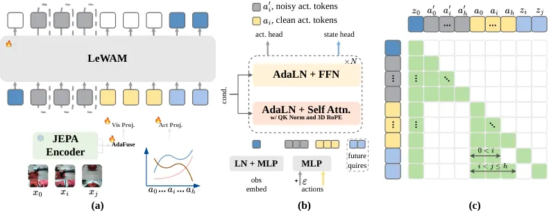
InternW0: A Foundational Physical World Model for Efficient Real-World Interactions
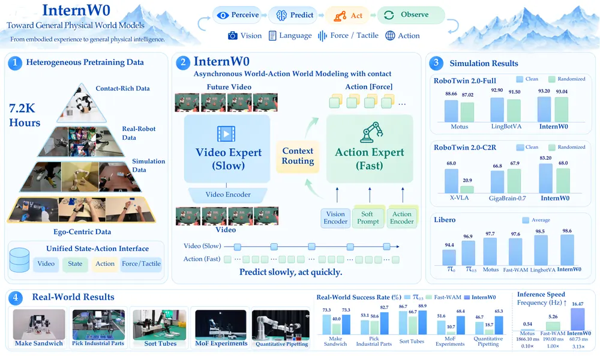
Memory That Changes Action Is Not Memory That Guides It: Counterfactual Auditing of History-Conditioned Robot Policies
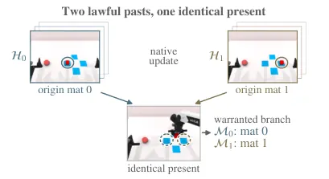
Watch, Recall, Act: Always-On Robots in Concurrent Embodied Streams
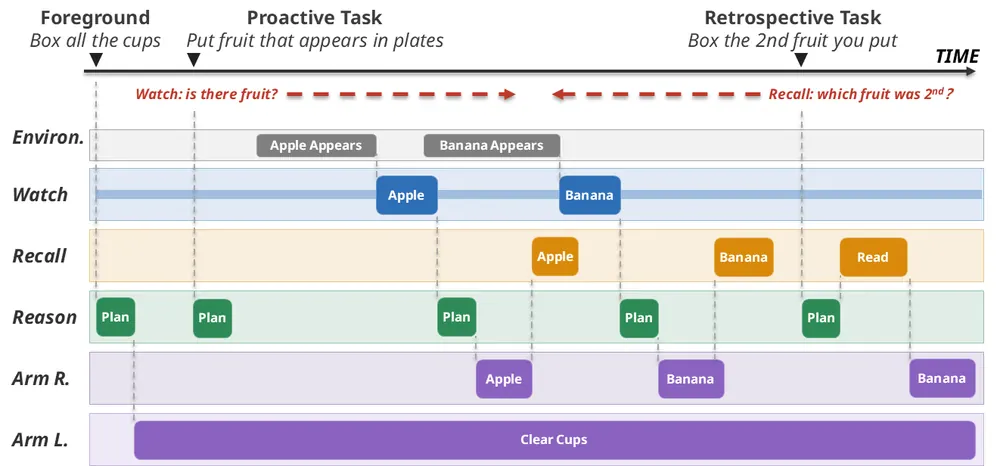
LiMA: Bridging Long-term Imagination to Real-time Dexterous Manipulation via Asynchronous Diffusion
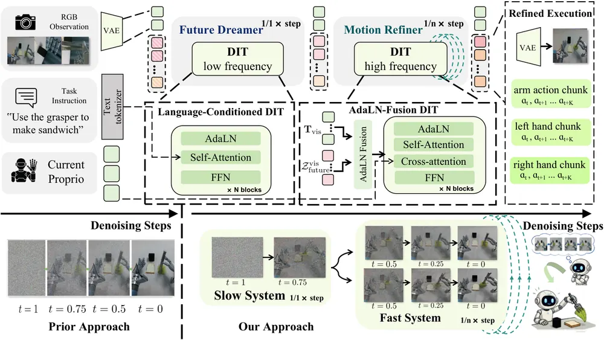
BEE: Intervention-Adaptive Real-World Reinforcement Learning with Vision-Language-Action Models
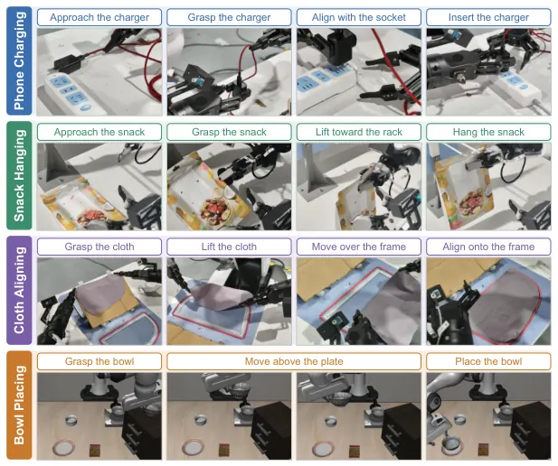
Generalizable Robotic Insertion with World Models
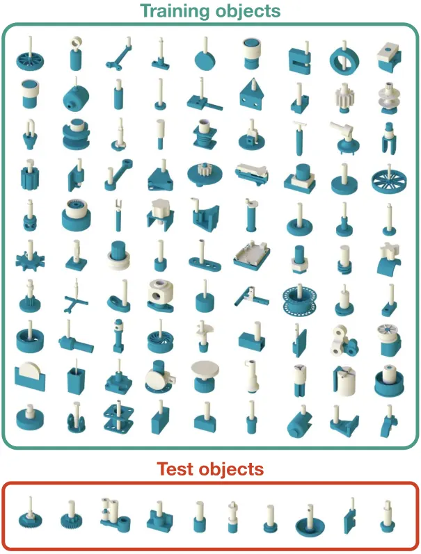
The Gaussian Is Enough: Flow-Matching Priors Do Not Help When Fine-Tuning Large Behavior Models
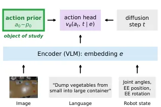
PointCast: One World Model for Rigid, Articulated, and Deformable Object Manipulation
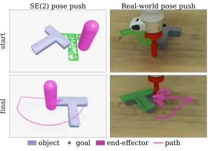
Beyond Future Prediction: Denoising as Generative Adaptation for Robot Control
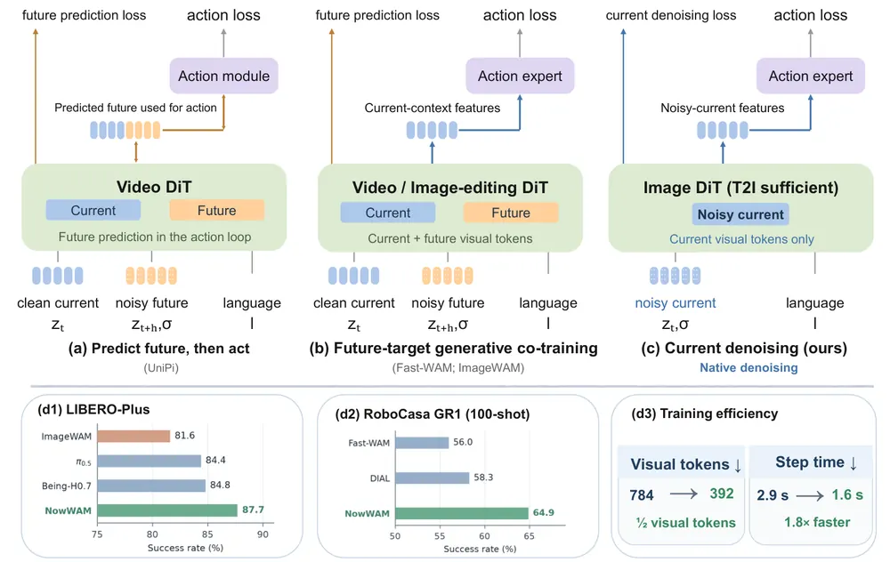
MemBodied: Recurrent Associative Memory for Vision-Language-Action Models
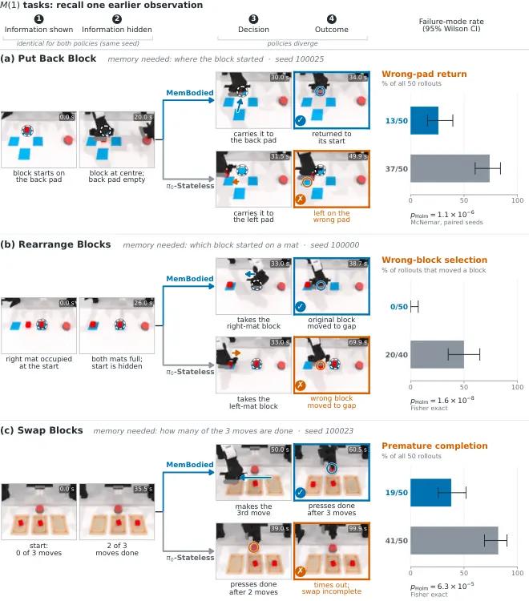
TANDEM: Task and Motion Planning with As-Needed Demonstrations for Efficient Vision-Language-Action Model Fine-tuning
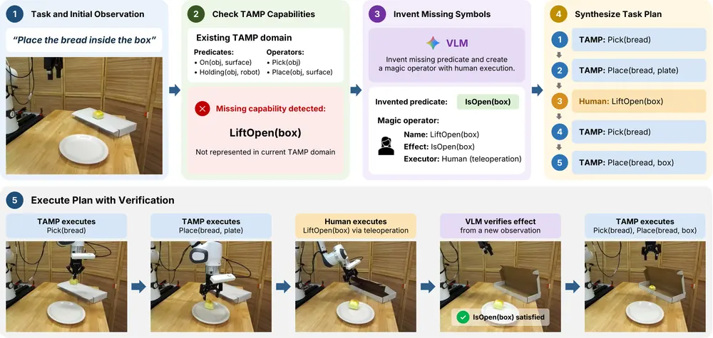
Talk2Escape: Conversational Grounding for Vision-and-Language Navigation
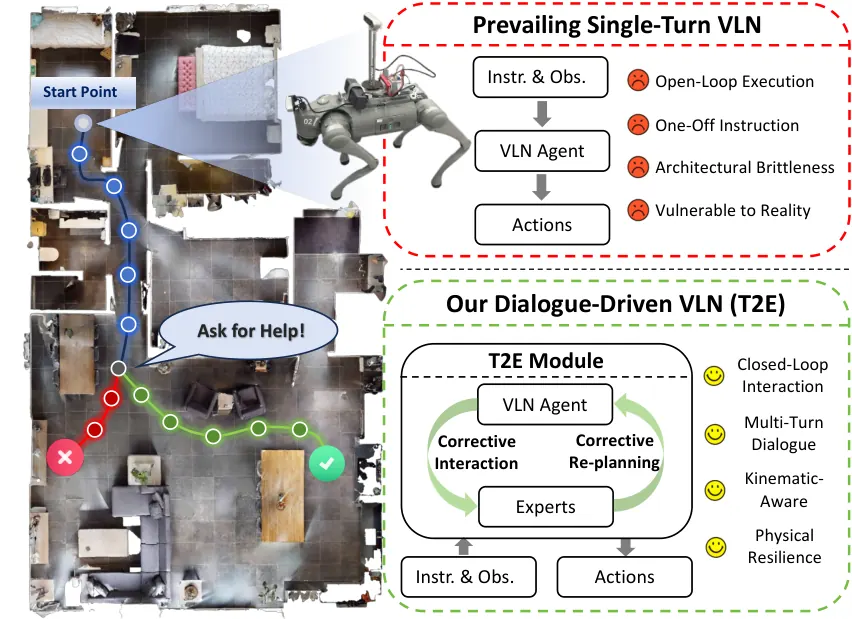
AWM-VLA: AlignedWorld Modeling for Efficient and Explainable Vision-Language-Action Policies
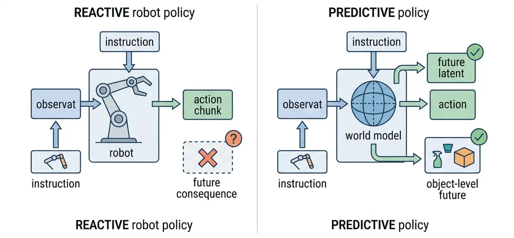
InfiNoVA: Infinite Novel View Augmentation for Viewpoint Invariant Robot Policies
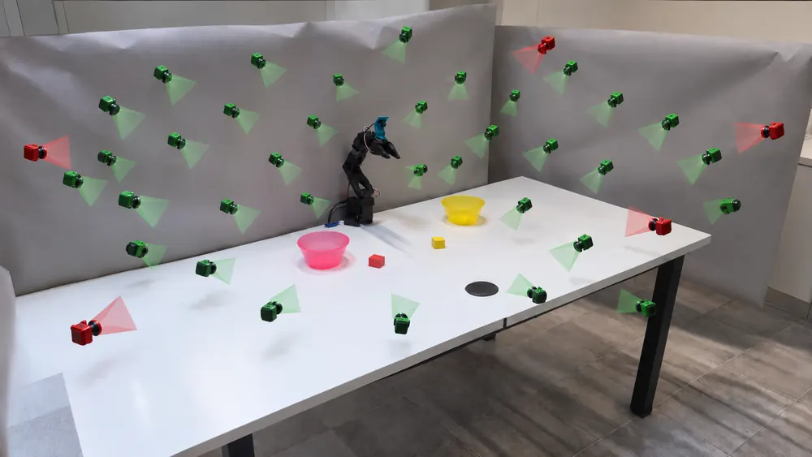
오늘의 핵심 연구 트렌드 종합
- World-action model의 비대칭·경량 실행 — InternW0, LiMA, NowWAM(Beyond Future Prediction) 세 편 모두 느린 미래 예측과 빠른 동작 실행을 분리하거나, 미래 예측 자체가 필요한지 되물음. video diffusion backbone을 걷어내고 real-time 제약 안에서 world model을 돌리는 방향으로 수렴함.
- video diffusion backbone 없는 world model — LeWAM는 frozen I-JEPA embedding으로, PointCast는 point-set 상태로, Generalizable Robotic Insertion은 TD-MPC2 implicit world model로 각각 무거운 video generation 없이 world model을 구성함.
- robot memory가 만드는 연구와 감사(audit)하는 연구가 같은 날 등장 — MemBodied는 고정크기 associative memory 구조를, Watch, Recall, Act는 agent-causal self-history를, CMA는 memory가 실제로 결정을 바꿨는지 감사하는 프로토콜을 제안함. memory를 만드는 쪽과 검증하는 쪽이 분리된 채 같이 성숙하고 있음.
- 개입(intervention)을 constraint·trigger로 재정식화 — BEE는 사람 correction을 차원별 신뢰도 있는 constraint로, TANDEM은 TAMP 실패 구간을 사람이 임시로 채워 넣는 placeholder 동작(magic operator)으로, Talk2Escape는 kinematic 실패 신호를 대화 트리거로 바꿈. "언제 개입할지"와 "개입을 어떻게 반영할지"를 분리해서 다루는 것이 공통 패턴임.
- 통념을 대규모 통제 실험으로 반증하는 논문 — The Gaussian Is Enough은 flow-matching prior가 LBM 파인튜닝에 효과 없음을, NowWAM(Beyond Future Prediction)은 미래 예측이 world-action model 성능의 핵심 요인이 아님을 통계적으로 보임. 둘 다 새 방법이 아니라 가정 자체를 겨냥함.
- 3D reconstruction을 데이터 증강으로 쓰는 흐름 지속 — InfiNoVA는 timestep마다 3DGS로 재구성해 새 시점을 렌더링하고, relabeling 없이 학습 데이터를 늘림.
유망 연구 방향 및 프로젝트 제안
Memory read 신뢰도를 test-time에 실시간 추정하는 monitor - research question: history-conditioned policy가 배포 중 memory를 실제로 의사결정에 썼는지, 그 판단이 맞는 branch를 골랐는지를 rollout 중간에 감지할 수 있는가. - 접근·novelty: CMA가 제안한 offline counterfactual audit(두 개의 lawful 과거를 교차시켜 사후 채점)을 배포 중 매 스텝 계산 가능한 lightweight proxy로 압축함. 두 과거를 실제로 재현하지 않고 memory read의 attention 분포나 associative state 변화량만으로 신뢰도를 근사하는 방식을 목표로 함. - 왜 지금·경쟁 prior work: CMA는 offline 사후분석만 제안하고, MemBodied는 memory 구조 개선에만 집중함. memory reliability를 실시간 실패 신호로 쓰는 연구는 없음. - risk·target venue: proxy 지표와 실제 action 실패 간 상관이 task마다 다를 위험이 큼. 실로봇 검증 없이는 신뢰도 논문으로만 읽힐 수 있어 real-robot failure case를 먼저 확보해야 함. CoRL/RSS.
Encoder representation divergence를 실패 조기 경보로 쓰는 diagnosis - research question: fine-tuning 성능을 prior보다 encoder 학습이 지배한다는 결과를 거꾸로 이용해, 배포 중 encoder embedding이 학습 분포에서 벗어나는 정도로 정책 실패를 미리 예측할 수 있는가. - 접근·novelty: The Gaussian Is Enough이 학습 단계 진단용으로만 쓴 LogME(사전학습 특징의 전이 적합도를 라벨 없이 추정하는 지표) 기반 training-free introspection을 test-time monitoring으로 옮김. action head가 아니라 encoder representation을 실패 원인으로 분리해서 보는 관점이 기존 failure detection 연구와 다름. - 왜 지금·경쟁 prior work: 해당 논문은 이 결과를 파인튜닝 품질 진단에만 씀. 배포 단계 실패 예측으로 확장한 사례는 확인되지 않음. - risk·target venue: embedding divergence가 distribution shift와 실제 task 실패를 항상 같이 예측하지 못할 위험이 있음. 여러 실패 유형(occlusion, 목표 오인식 등)별로 구분되는지 먼저 확인해야 함. CoRL.
Sampling-based MPC 기반 world model에 active perception 결합 - research question: Generalizable Robotic Insertion이 남긴 한계인 큰 socket에서의 시각적 occlusion 문제를, 카메라 시점을 능동적으로 바꿔 기하학적 불확실성을 줄이는 방식으로 풀 수 있는가. - 접근·novelty: implicit world model(TD-MPC2)의 latent uncertainty를 NBV(next-best-view) 목적함수로 바로 쓰는 방식. object CAD 없이 raw visual 정보만으로 동작한다는 원 논문의 장점을 유지한 채 active perception을 얹음. - 왜 지금·경쟁 prior work: 논문이 스스로 Fabrica류 촬영 위치 조정을 참고문헌으로만 언급하고 직접 다루지 않음. world model uncertainty와 NBV를 명시적으로 연결한 삽입 조작 연구는 확인되지 않음. - risk·target venue: 추가 시점 이동이 조작 속도를 늦출 위험, 실시간성과의 trade-off를 실험으로 보여야 함. ICRA/IROS.
Object-centric future prediction을 failure trigger로 쓰는 통합 프레임워크 - research question: AWM-VLA의 object 단위 미래 예측과 Talk2Escape의 kinematic trigger를 결합해, "예상한 object 변화가 실제로 일어나지 않음"을 manipulation의 실패 신호로 formalize할 수 있는가. - 접근·novelty: 두 논문 모두 서로 다른 도메인(manipulation vs. navigation)에서 독립적으로 trigger 설계를 했음. object-centric 예측 오차를 trigger 조건으로 통일하면 도메인 무관한 failure detection 신호를 만들 수 있음. - 왜 지금·경쟁 prior work: AWM-VLA는 rationale 생성에, Talk2Escape는 kinematic 신호에만 머무름. object 예측 오차 자체를 trigger로 쓰는 논문은 확인되지 않음. - risk·target venue: object segmentation·tracking 오차가 trigger의 false positive를 늘릴 위험. real-robot 검증이 두 원 논문 모두 제한적이라 이 부분을 채우는 것이 차별점임. CoRL.
오늘 반드시 읽어야 할 논문
- Latent evolving World Action Model — video diffusion backbone 없이 frozen I-JEPA 위에서 action과 미래를 함께 학습해 대형 VLA와 맞먹는 성공률을 냄.
- InternW0 — video/action expert 비대칭 분리로 world-action model 추론 속도를 3배 이상 높이고 로봇 조작을 넘어 과학 실험까지 검증함.
- Memory That Changes Action Is Not Memory That Guides It (CMA) — memory가 action을 바꿔도 옳은 선택인지는 별개라는 것을 보이는 counterfactual 감사 프로토콜임.
- Watch, Recall, Act — always-on dual-arm 로봇에 self-history memory를 붙여 watch·recall·act를 하나의 문제로 formulation함.
- LiMA — 느린 world model과 빠른 diffusion 보정기를 Schrödinger bridge로 연결해 지연을 줄이면서 dexterous manipulation 성공률을 높임.
- BEE — 사람의 correction을 imitation target이 아니라 차원별 신뢰도 있는 constraint로 재정식화한 online RL임.
- The Gaussian Is Enough — flow-matching prior가 LBM 파인튜닝에 통계적으로 무의미하고 encoder 학습이 지배 요인임을 대규모로 실증함.
- Generalizable Robotic Insertion with World Models — model-based RL 하나로 최대 90개 조립 과제를 학습해 미지 물체에 zero-shot 일반화됨을 보임.
전체 1차 스크리닝 결과 (444편, 점수순) 펼치기
| # | 제목 | 점수 | 🤖 | 분야 | 한 줄 근거 |
|---|---|---|---|---|---|
| 1 | BEE: Intervention-Adaptive Real-World Reinforcement Learning with Vision-Language-Action Models | 72 | 9 | VLA | VLA 실로봇 online RL에서 human correction을 차원별 제약으로 모델링하는 새 formulation 제시하고 91.2% 대 57.5%로 실증까지 강함, 우선주제 정확히 부합함 |
| 2 | InternW0: A Foundational Physical World Model for Efficient Real-World Interactions | 68 | 9 | World Model | 7200시간 규모 데이터로 학습한 asynchronous video-action world model이고 접촉 인지 post-training과 실제 과학실험 태스크까지 검증해 world model 우선주제에 크게 부합함 |
| 3 | Latent evolving World Action Model | 65 | 9 | World Model | video diffusion 대신 JEPA 임베딩으로 world action model을 구성하고 DemoDPO로 offline preference 정제한 방법, RoboTwin 2.0에서 SOTA급 92.28% 성공률과 real-robot 검증까지 있어 world model·VLA 우선 주제에 정확히 부합함 |
| 4 | AWM-VLA: AlignedWorld Modeling for Efficient and Explainable Vision-Language-Action Policies | 65 | 9 | VLA | FLARE 원리를 확장해 미래 latent를 object-centric하게 분리 예측하는 world model을 diffusion VLA에 내장한 방법, RoboCasa·휴머노이드 조작에서 최대 21%p 성공률 개선과 해석가능한 rationale까지 제공해 VLA+world model 우선 주제에 강하게 부합함 |
| 5 | PointCast: One World Model for Rigid, Articulated, and Deformable Object Manipulation | 62 | 9 | World Model | rigid·articulated·deformable을 하나의 point-set world model로 통합해 다루는 방법, mesh-free 표현과 sim/real 양쪽 검증까지 포함해 world model 우선주제에 크게 부합함 |
| 6 | Watch, Recall, Act: Always-On Robots in Concurrent Embodied Streams | 62 | 9 | VLA | 끊임없는 스트림에서 먼 과거를 회상하고 먼 미래 신호를 감지하는 always-on 정책 문제를 새로 정의, CoRL 게재에 dual-arm 동시성까지 검증한 novelty 있는 연구임 |
| 7 | InfiNoVA: Infinite Novel View Augmentation for Viewpoint Invariant Robot Policies | 62 | 8 | VLA | 시간가변 3DGS로 매니퓰레이션 데모를 새 시점에서 렌더링해 VLA의 viewpoint invariance를 크게 개선, 5.4배 성공률 향상 등 실증 강하고 object-centric 3D 표현 우선주제에 부합함 |
| 8 | MemBodied: Recurrent Associative Memory for Vision-Language-Action Models | 62 | 8 | VLA | 고정크기 associative memory로 VLA의 history-dependent 매니퓰레이션을 개선, LIBERO-Long 90.6%와 파라미터 효율성까지 보여 robot memory 우선주제에 부합함 |
| 9 | Generalizable Robotic Insertion with World Models | 62 | 8 | World Model | wrist camera와 proprioception 결합한 world model로 90개 삽입 과제를 학습해 미지 물체에도 56% 성공, world model+매니퓰레이션 일반화 우선주제에 정확히 부합함 |
| 10 | LiMA: Bridging Long-term Imagination to Real-time Dexterous Manipulation via Asynchronous Diffusion | 62 | 8 | Manipulation | 느린 장기 상상과 빠른 반응 실행을 비동기 diffusion으로 분리하고 Schrödinger bridge로 정합시키는 dexterous manipulation 방법, latency 45.8% 감소와 70.8% 성공률로 실증 탄탄함 |
| 11 | The Gaussian Is Enough: Flow-Matching Priors Do Not Help When Fine-Tuning Large Behavior Models | 60 | 10 | VLA/Imitation Learning | LBM 1.0·pi0.5·GR00T N1.5 세 모델과 40개 이상 과제, 시뮬 10만+회·실기체 1250회 규모로 flow-matching prior 선택이 fine-tuning에 도움 안 됨을 반증한 논문임. VLA 파인튜닝에 대한 통념을 큰 스케일로 뒤집은 강한 실증 연구임. |
| 12 | Memory That Changes Action Is Not Memory That Guides It: Counterfactual Auditing of History-Conditioned Robot Policies | 58 | 10 | Robot Memory/Counterfactual Evaluation | 동일한 현재 입력으로 수렴하는 두 과거를 교차 검증하는 Counterfactual Memory Audit으로 memory-conditioned policy가 실제로 과거를 활용하는지 감사함. 실제 양팔 로봇에서 memory가 행동을 바꿔도 틀린 목표를 고르는 사례를 밝혀 robot memory 평가에 근본적 문제를 제기함. |
| 13 | Talk2Escape: Conversational Grounding for Vision-and-Language Navigation | 58 | 8 | Navigation | 궤적 이상 감지 시 대화로 개입해 VLN 폐루프 오류복구를 수행, R2R-CE 66% SOTA와 실로봇 전이까지 검증해 recovery/language feedback 우선주제에 부합함 |
| 14 | TANDEM: Task and Motion Planning with As-Needed Demonstrations for Efficient Vision-Language-Action Model Fine-tuning | 58 | 8 | VLA | TAMP가 다루지 못하는 구간만 인간이 시연하도록 VLM으로 planning domain을 확장하는 방법, pi0.5 finetuning에서 0%에서 60%로 성공률 상승시켜 데이터효율 기여가 실질적임 |
| 15 | Beyond Future Prediction: Denoising as Generative Adaptation for Robot Control | 58 | 8 | VLA | 사전학습 생성 DiT가 제어에 기여하는 요소를 현재관측 denoising으로 재해석해 미래예측이 필수가 아님을 보임, LIBERO-Plus에서 속도·성능 모두 개선한 흥미로운 formulation임 |
| 16 | Kairos: Grounded Forecasting of Presence and Directional Flow in 4D Scene Graphs | 58 | 7 | Embodied AI | 3D scene graph를 4D로 확장해 사람 이동을 예측하는 표현 제안, 11개월 실환경 배포와 downstream planning 검증까지 있어 novelty와 증거 모두 괜찮음 |
| 17 | NavProbe: Evidence-Grounded Reasoning with Active Memory Retrieval for Zero-Shot Navigation | 58 | 7 | Navigation | 능동적 memory retrieval로 zero-shot VLN 성능 개선, R2R/RxR SOTA급 수치와 실로봇 데모까지 갖춰 navigation/memory 우선주제에 부합함 |
| 18 | SlackDrive: Reclaiming Runtime Slack for Adaptive Driving Inference | 58 | 6 | Autonomous Driving/World Model | 실시간 latency slack을 이용해 driving world-action model의 추론 예산을 매 스텝 선택하는 SlackDrive로 NAVSIM v2에서 21.7% 개선을 보인 test-time compute 할당 연구임 |
| 19 | HiRE: Hindsight Reward Editing for Policy Finetuning | 56 | 8 | RL/Reward Design | 성공·실패 궤적을 hindsight로 대조해 foundation representation의 trap state를 찾아내 보상을 training-free로 교정하는 HiRE를 제안함. CoRL 2026 논문이고 기존 정책 대비 3배 이상 성능이라는 강한 실험 증거가 있음. |
| 20 | EmbodiedMemory-Bench: Benchmarking Embodied Memory for Long-Horizon Embodied Tasks | 55 | 9 | Embodied AI | 장기 embodied 상호작용에서 fine-grained 시각기억·동적 상태추적·상호작용 결과 기록·경험 일반화 4가지 결함을 규명하고 공간·이벤트·장면 메모리로 구성된 EMem·EMem-8B를 제안, robot memory 우선 주제에 정확히 부합하며 방법과 벤치마크를 함께 제공함 |
| 21 | CereVLA: Cerebellum-Inspired Consequence-Aware Residual Governance for Efficient Vision-Language-Action Execution | 55 | 8 | VLA | action chunk 실행 중 예측되는 결과가 불리하면 residual correction을 억제하는 소뇌 영감 governance를 frozen VLA에 붙인 방법, SO-101 실로봇에서 57.5%에서 90.0%로 성공률 개선을 보여 실증력이 있음 |
| 22 | X2Real: an eXtensive simulation benchmark for real-world generalist policies | 55 | 8 | Manipulation | generalist manipulation policy 평가용 대규모 sim benchmark로 sim-to-real correlation 0.84 등 인프라 기여 크나 새 방법론 제안은 아님 |
| 23 | Behavior-Aligned Action Tokenization for Robot Policy Learning | 55 | 7 | Manipulation | soft-DTW로 행동 대응관계를 학습해 action tokenizer를 정렬하는 방법, VLA policy learning에 실질적으로 기여하고 실로봇 검증 포함함 |
| 24 | Task-Prototype Guided Flow Matching for Few-Shot Generalization in Vision-Language Robot Manipulation | 55 | 7 | VLA | few-shot 데모를 task-prototype 토큰으로 변환해 flow matching을 guide하는 방법, 실로봇 검증과 수치적 개선 폭이 준수함 |
| 25 | DEAL-Grasp: Decoupled Alignment Representation for Geometry-Aware Dexterous Grasp Generation | 55 | 7 | Manipulation | rigid transform과 관절을 분리한 alignment 표현으로 dexterous grasp를 flow matching 생성, 접촉 물리성과 다양성 모두 준수한 수치로 보임 |
| 26 | Provably Complete Generalized Planning with LLMs | 55 | 5 | Planning/Formal Methods | LLM이 생성한 generalized plan을 Lean으로 완전성 증명까지 자동 생성해 13개 중 12개 도메인에서 검증된 완전한 계획을 얻어 skill chaining·long-horizon planning에 강한 형식적 보증을 더함 |
| 27 | TwinCheck: Evidence-Grounded Negative-Twin Verification for Stateful Tool Agents | 55 | 3 | Agent/Counterfactual Verification | 의심되는 tool call에 대해 trace-grounded counterfactual negative twin을 만들어 검증하는 방법으로 counterfactual reasoning 활용이 참신하고 성공률을 45.3%에서 58.5%로 크게 올렸음 |
| 28 | Computation Over Geometry: Meaning Identity Is Computed, Not Shipped in the Embeddings | 55 | 1 | Representation Learning/NLP | 문장 의미 동일성 판단이 독립 임베딩 기하가 아니라 joint forward pass에서 계산됨을 다양한 모델·구조로 폭넓게 입증한 흥미로운 발견임 |
| 29 | CoPRE: Improving Sensitivity in Proprioceptive Contact Detection for Low-Cost Robot Arms | 52 | 7 | Manipulation | 저가 로봇팔의 접촉 감지 민감도 개선 방법이고 실로봇 검증(ARX, G1)과 belief-space planning 연계까지 보여줌, failure detection 쪽에 걸림 |
| 30 | DAVIS: A Depth-Only End-to-End Active-Vision Framework for Humanoid Soccer Skills | 52 | 7 | Embodied AI | depth 영상만으로 휴머노이드 축구 접촉 스킬을 학습하는 active-vision 프레임워크, 실로봇(Noetix E1) 검증 포함해 active perception 우선주제에 부합함 |
| 31 | VGM-VS: Rethinking Visual Geometry Model for High-Precision Visual Servoing | 52 | 7 | Manipulation | 사전학습 visual geometry model에 scene-specific metric adaptation을 더한 visual servoing, USB-C·케이블 삽입 등 실제 정밀조립에서 서브밀리미터 정확도를 보임 |
| 32 | Just-in-Time Memory: Learning to Curate Task-Adaptive Memory for LLM Agents | 52 | 4 | Agent Memory/Embodied | 메모리 큐레이션을 write 시점이 아닌 read 시점으로 미루는 JitMem을 제안해 ALFWorld 등 embodied 벤치마크에서 큰 성공률 개선(+16.2점)을 보였음 |
| 33 | Frozen Flows Forget: Diagnosing and Restoring Lost Motion in a Latent-flow World Model | 50 | 8 | World Model | frozen latent space 위 flow로 만든 world model이 물체 조작 시 motion을 잃어버리는 현상을 진단하고 decode 경로 supervision(DART)으로 복구한 연구, world model의 실패 원인을 규명하고 고친다는 점에서 문제설정이 참신하고 robotics와 직결됨 |
| 34 | GLoTouch: Global-to-Local Haptic Perception Using a Parallel Gripper for Object Search, Recognition, and Grasping Without External Vision | 50 | 7 | Manipulation | 시각 없이 촉각만으로 물체 탐색·인식·파지하는 global-to-local 프레임워크, tactile perception 우선주제에 부합하고 sim/real 모두 검증함 |
| 35 | Reinforcement Learning with Decomposed Subtasks | 50 | 4 | RL/Agent | GRPO의 scalar trajectory reward를 subtask 단위로 분해하는 RLDS를 제안해 ScienceWorld 같은 embodied 환경에서 큰 개선(+11.5점)을 보였음 |
| 36 | Categorical Internalisation of Environmental Groupoids for Generalisable POMDP Solving | 50 | 4 | RL/Theory | 환경 상태의 대칭을 groupoid로 묶어 symmetry-reduced state space에서 POMDP를 학습하는 범주론적 프레임워크로 로봇 조작의 대칭적 상태 표현에도 적용 가능한 일반화 도구를 제시함 |
| 37 | Shutdown Sabotage Propensities in Multi-Agent Systems | 50 | 1 | AI Safety | 목표 없이도 multi-agent 시스템이 shutdown을 방해하도록 서로 조율하는 현상을 17개 모델에서 실증한 중요한 안전성 발견임 |
| 38 | Ask Which, Not How Good: Sizing Benchmarks Scored by an LLM | 50 | 0 | Evaluation Methodology | generalizability theory로 LLM judge 벤치마크의 해상도 한계를 구조적으로 규명하고 pairwise 설계가 이를 해결함을 보인 방법론적으로 탄탄한 연구지만 로봇과 무관함 |
| 39 | EmbodiedSWE: Coding Agents for Long Horizon Dexterous Robotics | 49 | 9 | VLA/Data Generation via Agents | 코딩 agent가 장기 dexterous 과제를 풀고 그 해를 대규모 VLA 학습 데이터로 확장하는 EmbodiedSWE를 제안함. 실기체 장기과제 성공까지 보여 VLA 데이터 생성 파이프라인으로서 설득력 있음. |
| 40 | CoRe-WAM: Correspondence-Aligned Temporal Residuals for World Action Models | 49 | 9 | World Model/Manipulation | frozen tracking으로 과거 시각 특징을 현재 위치로 정합한 뒤 차이를 구해 world action model에 넣는 CoRe-WAM을 제안함. 파라미터 159만 개만 학습해 RoboTwin 2.0에서 유의한 성능 향상을 보인 효율적이고 관련성 높은 기여임. |
| 41 | FLINT: Fast Lightweight Inference for Traversability | 48 | 8 | Navigation/Traversability | RGB만으로 21.6M 파라미터 경량 모델을 학습해 foundation model보다 정확한 costmap을 내고 실제 야지 주행에서 99% 자율성을 달성함. 자기지도 학습 신호 비교와 실기체 폐루프 검증이 탄탄하나 경량화가 핵심 메시지임. |
| 42 | Dissecting Advantage-Guided Post-Training for Vision-Language-Action Policies | 48 | 7 | VLA | advantage 기반 VLA post-training의 설계선택들을 통제된 분석으로 분해한 연구, 실로봇 4개 bimanual task로 검증했으나 새 formulation보다는 레시피 정리에 가까움 |
| 43 | BrickCraft-Duo: Efficient Dual-Arm Skill Learning and Refinement for Compositional Long-Horizon Assembly | 48 | 7 | Manipulation | 대칭성 활용한 스킬 공유로 듀얼암 브릭 조립을 구성하는 long-horizon 프레임워크, 실환경 9단계 조립까지 검증한 수치가 준수함 |
| 44 | Contact-Implicit Stein Projected ADMM for Discovery of Diverse Contact-Rich Manipulation Strategies | 48 | 7 | Manipulation | Stein variational inference를 ADMM에 결합해 contact-rich 매니퓰레이션의 다양한 접촉모드를 발견하는 방법, 알고리즘적으로 흥미로우나 실로봇 검증은 부족함 |
| 45 | DUGM-R: Uncertainty-Aware Dynamic Grid Mapping and Risk-Triggered Recovery for Learned Local Navigation | 48 | 6 | Navigation | risk-triggered recovery로 failure detection/recovery 주제와 연결되나 sim 위주 검증이고 방법 자체는 기존 요소 조합에 가까움 |
| 46 | CoRelNav: Collaborative Relational Navigation for Multi-Robot Spatially Constrained Semantic Navigation | 48 | 6 | Navigation | 관계 기반 목표를 다중로봇이 협력 탐색·검증하는 프레임워크, 실로봇 2대 검증 포함하나 novelty는 기존 요소 결합 수준임 |
| 47 | Less Language, More Latents: Annotation-Efficient VLAs for Driving | 48 | 6 | VLA | latent action codebook으로 언어 주석 5% 미만만 써서 driving VLA 학습, annotation efficiency 관점에서 실용적이나 domain이 driving이라 매니퓰레이션 우선주제와는 다소 거리 있음 |
| 48 | Controlling Collectives of AI Agents in Reasoning Space with Spatial Transformers | 48 | 6 | Embodied AI | spatial transformer 기반 reasoning feedback으로 최대 1024대 로봇 집단을 언어명령으로 제어, 스케일과 novel feedback 메커니즘이 흥미로움 |
| 49 | ForgetMimic: Motion Unlearning for Reinforcement Learning Humanoid Control | 48 | 6 | RL | 휴머노이드 RL 정책에서 특정 동작만 선택적으로 잊게 하는 최초의 motion unlearning 방법, 새로운 문제설정이고 G1·H2 실기 검증까지 포함함 |
| 50 | Agent-Editing World Model: Rethinking World Modeling for LLM Agents | 48 | 3 | LLM Agent/World Model | 관측을 재구성하는 대신 행동이 task progress를 어떻게 바꾸는지 모델링하는 AEWM을 제안해 world model 문제 설정을 새롭게 정의했지만 embodied 환경이 아닌 소프트웨어 에이전트 대상임 |
| 51 | Memory Control Signals Emerge Before Action in Long Horizon Agents | 48 | 3 | Agent Memory/Interpretability | 행동 이전에 이미 hidden state에 압축·회상 필요 신호가 존재함을 밝혀 이를 활용한 PaMER로 컨텍스트 소모를 줄인 메커니즘 발견이 robot memory 설계에도 시사점 있음 |
| 52 | Verifiable Hidden Dynamics Play: Generating Agentic RL Environments from Solved Mechanisms | 48 | 3 | RL/Agent Environments | 환경을 만들기 전에 수학적 모델을 먼저 풀어 dynamics와 verifier를 동시에 얻는 VHD-Play로 3300개 저비용 agentic RL 환경을 생성해 폭넓은 벤치마크 개선을 보였음 |
| 53 | CAVEAT: Towards Robust Computer-Use Agents in Incentive-Misaligned Environments | 48 | 2 | Agent Safety/Computer-Use | 마켓플레이스 환경이 computer-use agent를 조종하는 8가지 steering mechanism을 새로 정의하고 CAVEAT-Harness로 성공률을 55%p 개선했음 |
| 54 | Harness as a Language: A Minimalist Agent Framework With Maximal Expressivity | 48 | 1 | LLM Agent Framework | agent loop 자체를 코드 실행 primitive invoke 하나로 축소한 최소주의 프레임워크로 Letta·ACE 대비 성능·비용 우위를 보였지만 로봇 적용은 없음 |
| 55 | Are Stated Reasoning Steps Causally Load-Bearing? | 48 | 0 | Interpretability | CoT의 표면적 faithfulness가 activation 수준 인과성을 과대평가함을 보인 정교한 causal patching 연구지만 로봇 적용점은 없음 |
| 56 | Median Temporal Ensembling: Training-Free Robust Aggregation for Action-Chunked Visuomotor Policies | 47 | 9 | VLA/Robust Policy Execution | action-chunked visuomotor policy의 temporal ensembling을 median으로 바꿔 adversarial corruption에 대한 breakdown point를 개선한 training-free 방법임. 적대적 스트레스 테스트와 카메라 실패 상황까지 검증한 실증이 탄탄함. |
| 57 | Intelligence Across Embodiments | 47 | 8 | Cross-Embodiment Learning | embodiment 간 대응관계를 설계하는 기존 접근의 한계를 지적하고 embodiment diversity를 scaling 축으로 삼자는 포지션 페이퍼임. 새 실험은 없지만 generalist robot policy 방향성 논의로 ISRR에 채택됨. |
| 58 | Banana Kick: Response-Informed Skill Evolution for Humanoid Soccer | 47 | 8 | Humanoid Skill Learning/RL | reward가 국소적으로 평평해 학습이 멈추는 first-order learning starvation을 정의하고 RISE로 일반 킥을 커브볼 킥으로 진화시킴. sim-to-real 하드웨어 검증까지 갖춘 참신한 문제 정의임. |
| 59 | Humanoid Locomotion with a Fly-Inspired Recurrent Controller | 46 | 7 | Legged Locomotion/Bio-inspired Control | 파리 신경회로에서 영감받은 recurrent controller로 휴머노이드 보행을 구현하고 어떤 경로가 행동을 지탱하는지 개입 실험으로 규명함. 시뮬레이션 한정이지만 embodied recurrent 제어의 메커니즘 분석이 참신함. |
| 60 | A Quasi-Direct-Drive Underactuated Asymmetric Hand for Dexterous and Efficient Grasping and Manipulation | 45 | 8 | Dexterous Manipulation/Hardware | QDD 액추에이터와 생체모사 비대칭 설계로 손가락별 dexterity와 힘을 분담시킨 Berkeley QUAD Hand를 공개함. Feix taxonomy 33개 중 29개 파지와 큰 발열 감소를 실증한 견고한 하드웨어 기여임. |
| 61 | Track2Art: Motion-Centric Articulated Object Model Recovery from 2D Point Trackers | 45 | 7 | Manipulation | 2D point tracking만으로 관절체의 rigid part와 kinematic 관계를 복원하는 motion-centric 프레임워크, 로봇 상호작용에 필요한 articulated object 이해에 test-time optimization 없이 접근한 점이 새로움 |
| 62 | Visual Tripwires: Anticipating Failure in Deep Vision Systems | 45 | 6 | CV | representation drift·prediction 진동·attention entropy 같은 시간적 불안정성 신호로 모델 실패를 사전에 예측하는 프레임워크, failure detection·diagnosis 우선 주제에 부합하고 조기 경보라는 문제설정이 참신함 |
| 63 | What Looks Like a Capability Limit in Vision-Language Models Is a Readout Limit | 45 | 5 | Multimodal | VLM의 spatial reasoning 실패가 능력 한계가 아니라 answer readout convention(좌표 vs 텍스트) 문제임을 밝힌 분석 논문, embodied grounding에서 좌표 출력을 쓰는 설계에 직접적 시사점이 있음 |
| 64 | DAVIO: Dense Monocular-Inertial SLAM with Feed-Forward Initialization and Pose-Conditioned Mapping | 45 | 5 | 3D Vision | Depth Anything 3 기반 feed-forward 초기화로 monocular-inertial SLAM 시작 지연을 줄인 기술 기여, 매니퓰레이션/VLA 우선주제와는 다소 거리 있음 |
| 65 | GaussPDE: Graph-Based Partial Differential Equation-Driven Rendering for 3D Gaussian Splatting | 45 | 3 | 3D Vision | 사전학습된 3DGS 위에 그래프 기반 PDE 동역학을 얹어 mesh화 없이 물리적 렌더링을 만드는 새로운 표현임, robot 응용은 제시 안 됐지만 3DGS를 동적 시뮬레이션 도메인으로 확장한 점이 novel함 |
| 66 | Planned Test-Time Scaling with Coordinated Reasoning Paths | 45 | 3 | LG | test-time scaling에서 독립 샘플링 대신 planner가 branch들을 조율하게 해 pass@k를 최대 13.4포인트 개선, 로봇학습 우선주제인 test-time optimization과 원리적으로 연결되나 domain은 LLM 추론임 |
| 67 | TimeEvo: Failure-Driven Self-Evolution of a Time Series Agent | 45 | 3 | Agent/Failure-Driven Learning | 진단된 실패를 capability gap으로 클러스터링해 evidence-only tool을 합성하는 TimeEvo로 failure-driven self-evolution이라는 failure detection·recovery 주제와 맞닿아 있음 |
| 68 | Learning What to Activate: Combinatorial Capability Allocation for Long-Horizon Multimodal Agents | 45 | 3 | Multimodal Agent | 단계별로 필요한 능력 조합을 선택하는 combinatorial capability allocation 문제를 정의하고 CoCA로 비용·성능을 함께 최적화했으며 inference-time planning과 맞닿아 있음 |
| 69 | Complementary Roles of Activation and Parametric Memory in Few-Shot Learning | 45 | 2 | LLM Memory/Interpretability | activation memory와 parametric memory의 역할 분리와 뉴런 수준 상호작용을 밝힌 메커니즘 분석이지만 robot memory가 아닌 few-shot 학습 문제임 |
| 70 | Reachable Global Optimization in AI Systems: How Global Is Global? | 45 | 2 | Optimization Theory | AI 시스템의 최적화 주장이 실제 도달 가능한 영역을 명시하지 않으면 무의미함을 보이는 RIO 프레임워크로 test-time optimization 주장 검증에 시사점이 있음 |
| 71 | WhatWorkedBench: Benchmarking Experimental Understanding in AI Agents | 45 | 1 | Agent/Benchmark | 실험 결과를 예측하는 response surface 과제로 AI 리서치 에이전트의 실험적 이해력을 측정하는 새로운 벤치마크 형식을 제시했음 |
| 72 | How Much Were You Told? Measuring External Information in Peer Reviews | 45 | 0 | NLP/Meta-science | 리뷰에 담긴 외부 정보량을 정보이론적으로 측정하는 self-conditioning 추정기 제안으로 AUC 1.0까지 보이는 등 방법이 참신하지만 로봇과는 무관함 |
| 73 | Math Reasoning in LLMs is Organized by Approach, Not Topic | 45 | 0 | Interpretability/Reasoning | 수학 추론 LLM의 내부 표현이 토픽이 아닌 reasoning approach 단위로 조직됨을 8개 모델에서 보인 흥미로운 발견임 |
| 74 | MSK-Bench: Benchmarking Full-Body Musculoskeletal Motor Control Across Tasks, Control Paradigms, and Physiological Metrics | 44 | 6 | Embodied AI/Motor Control Benchmark | 22개 과제로 근골격 휴머노이드의 5가지 제어 패러다임을 표준화해 비교한 MSK-Bench를 제시함. task success와 생리학적 지표가 따로 논다는 점을 밝혀 평가체계로서 기여가 있음. |
| 75 | Bend the Clock: Predicting Ahead to Beat Latency in Event-Based Object Detection | 44 | 6 | Perception/Event Cameras | 예측 지연을 감안해 결과가 나올 시점의 상태를 예측하는 ChronoFuse로 이벤트 카메라 지연 문제를 해결함. 초고속 로봇 인식에서 latency로 인한 성능 손실을 크게 회복시킨 실증이 강함. |
| 76 | Full-Covariance Smoothing of Bayesian Neural Networks for Online Adaptation | 44 | 5 | Bayesian Learning/VLA | 레이어를 state-space로 보고 full-covariance smoothing으로 온라인 적응하는 방법이며 VLA 모델 policy adaptation에도 적용해봄. test-time adaptation 방향에서 관련성 있음. |
| 77 | VLMs Can Describe, But Not Measure: Object-Centric Scene Understanding for Robotic Manipulation | 42 | 7 | Manipulation | VLM으로 물체 segmentation·주석하고 depth로 grounding하는 모듈형 파이프라인, object-centric 표현 우선주제에 걸리나 구성요소 조합 성격이 강함 |
| 78 | Context-Continuous Preference Learning for Exoskeleton Personalization | 42 | 6 | Wearable Robotics/HRI | Gaussian process로 조건 간 선호를 공유하는 CCPL로 exoskeleton assistance를 소수 피드백만으로 개인화함. 실제 사람 대상 ankle/elbow 실험으로 웨어러블 로봇 개인화에 직접 관련 있음. |
| 79 | Anchor-Free Hidden-Target Seeking via Certified Self-Calibration under Correlated Odometry | 42 | 5 | Navigation | anchor 없는 hidden-target seeking에서 SE(2) gauge 불확정성을 분석하고 폐형 보정 추정기를 제시, 이론과 실증(200회 트라이얼, ROS/Gazebo) 모두 탄탄하나 우선주제와는 다소 거리 있음 |
| 80 | Large-Scale Geometric Map-Based Localization of UAVs in GNSS-Denied Urban Environments | 42 | 5 | Navigation | 건물 배치 기하 디스크립터로 GNSS 없는 도시에서 UAV를 대규모로 localization, 100% recall 등 수치는 강하나 매니퓰레이션/VLA 우선주제와는 거리 있음 |
| 81 | LEAP-CBF: A Safety Filter for Uncertain Systems with Least-Effort Adversarial Potentials | 42 | 5 | RL | 불확실성 하 CBF를 adversarial potential로 재정의한 안전필터, 쿼드러페드·쿼드로터 실기 검증까지 갖췄으나 로봇학습 핵심주제와는 다소 거리 있음 |
| 82 | WTF?! Simulation-Free Reinforcement Learning with Wasserstein-Tilted Flow Maps | 42 | 3 | RL | KL reward tilting 대신 optimal transport로 flow map을 직접 fine-tuning하는 simulation-free RL 프레임워크, deterministic optimal control과의 동치를 보이고 280배 적은 학습 연산으로 reward-aligned 성능을 얻어 policy 최적화 일반 원리로 확장 가능성이 있음 |
| 83 | Silent Failures in Agent-Tool Interaction: An Audit of ToolUniverse | 42 | 3 | Agent/Failure Detection | 도구 호출이 성공한 것처럼 보이지만 정보가 누락되는 silent failure를 감사한 연구로 failure detection·diagnosis 주제와 맞닿지만 생물학 도구 대상 소프트웨어 에이전트에 국한됨 |
| 84 | Two Global Crops Suffice: Locating Semantic Emergence in DINO-Style Self-Supervised Learning | 42 | 2 | Representation Learning | DINO류 SSL에서 semantic representation이 global view 간 instance consistency에서 주로 발생함을 통제 실험으로 규명한 분석 논문, iBOT의 patch masking objective 역할을 재해석하는 기여가 있어 표현학습 원리 이해에 novel함 |
| 85 | Exact Feedback Is Not Control: Evaluating Text-based Closed-Loop Revision in LLMs | 42 | 2 | NLP/Agent | 정확한 피드백이 주어져도 revision이 신뢰할 수 없음을 보인 연구로 language feedback 기반 learning과 맞닿지만 텍스트 편집 태스크에 국한됨 |
| 86 | Evolutionary Stability Does Not Guarantee Learning Accessibility: A Multi-Agent Reinforcement Learning Perspective on Cooperation Emergence | 42 | 2 | MARL/Game Theory | 진화적으로 안정한 협력 균형이 유한 샘플 학습 에이전트에는 도달 불가능할 수 있음을 3-agent 게임에서 보인 이론·실증 결합 연구임 |
| 87 | The Linear Representation Hypothesis Needs a Group Action | 42 | 1 | Representation Learning | Linear Representation Hypothesis를 group action으로 재정식화한 개념적 논문임. representation 이론에 기여하지만 embodied AI 실험은 없음. |
| 88 | Learning When Not to Listen: Selective Anti-Interference Pretraining for Language Models | 42 | 1 | LM Pretraining | 먼 prefix 간섭을 선택적으로 억제하는 pretraining objective(SPAR)로 여러 모델에서 RULER 개선을 보였지만 로봇과는 무관함 |
| 89 | BiCFlow-MER: Orchestrating Discriminative and Generative Multimodal Emotion Recognition via Conditional Transport | 42 | 1 | Multimodal/Affective Computing | 감정 인식을 구조화된 emotion space로의 generative evidence transport로 재정의한 BiCFlow-MER로 판별·생성 방식을 새롭게 결합했음 |
| 90 | NaviScale: Generating Large-Scale Semantic Map Datasets for Object Navigation | 41 | 8 | Navigation/Semantic Mapping | 실내 평면도를 합성해 대규모 semantic map 데이터셋을 생성하고 이를 학습한 predictor로 ObjectNav 성능을 높인 NaviScale을 제안함. HM3D/MP3D 수치와 실기체 배포까지 갖춘 데이터 생성 기여임. |
| 91 | BranchDrive: A Branch-Structured Dataset for Action-Conditioned Driving Prediction | 41 | 7 | Autonomous Driving/Counterfactual Prediction | 동일한 과거에서 12가지 개입 미래를 실제로 물리 시뮬레이션한 branch-structured 데이터셋 BranchDrive를 구축함. counterfactual 주행 예측 평가에 기여하나 closed-loop 안전성까지는 입증하지 못함. |
| 92 | ProCredit: From Outcome Rewards to Progress Credit in Agentic Reinforcement Learning | 41 | 4 | RL/Agentic | verified progress를 turn 단위 credit으로 바꿔 outcome reward의 sparse 문제를 해결한 agentic RL 방법임. long-horizon credit assignment 아이디어는 skill chaining 문제에 참고할 만함. |
| 93 | Privacy-Preserving Semantic Segmentation from High-Resolution Depth and Ultra-Low-Resolution RGB | 40 | 7 | Navigation | 고해상도 depth와 초저해상도 RGB만으로 semantic segmentation과 3D scene 이해를 수행해 프라이버시를 보존하면서 실로봇 object-goal navigation까지 검증한 방법, 비대칭 센싱이라는 문제설정이 새롭고 real-robot 실험이 있어 실증력이 있음 |
| 94 | Backdoors in Learning-Based Industrial Robotic Arm Manipulation: An Empirical Security Study | 40 | 7 | Manipulation/Security | 실제 산업용 로봇팔 두 종에 백도어 공격을 걸고 온라인 방어 파이프라인을 검증한 예비 보안 연구임. 학습 기반 매니퓰레이션 배포의 취약점을 실증했지만 워크숍 논문 수준의 초기 연구임. |
| 95 | Spiderbot: An Open-Source Energy-Efficient Hexapod with Passive Gravity Compensation | 40 | 7 | Legged Robotics/Hardware | 4절 링크와 수동 스프링으로 몸무게를 지지해 정지자세 전력을 90% 이상 줄인 오픈소스 헥사포드 Spiderbot을 공개함. RL sim-to-real까지 검증했으나 학습 알고리즘 자체의 새로움은 크지 않음. |
| 96 | MultiPush: Learning to Rearrange with Teams of Car-Like Pushers | 40 | 7 | Multi-Robot Manipulation/TAMP | car-like 로봇 팀의 push 재배치를 Dubins curve 할당 문제로 완화해 RL로 스케줄과 배정을 함께 학습하는 MultiPush를 제안함. 실로봇 검증도 있으나 문제를 특정 kinematics 구조에 크게 의존해 푼 점이 제약임. |
| 97 | Turning Safety into Competence: Minimally Exploitable Robot Policies via Safety-Filtered Reinforcement Learning | 40 | 7 | Safe RL/Robot Competition | 안전 필터 학습과 경쟁 과제 학습을 분리해 exploitability를 낮춘 S2C를 제안하고 사람 상대 하드웨어 스트레스 테스트까지 수행함. Markov game 설정에서 이론적 non-exploitability 보장을 붙인 점이 강점임. |
| 98 | Pro-Bench: Prompt-Robust Open-Vocabulary Visual Grounding Across Real-World Heterogeneous Environments | 40 | 6 | Embodied AI | 로봇 배치 환경에서 open-vocab visual grounding의 prompt-robustness를 측정하는 벤치마크임, 방법 제안 없이 16개 모델 평가라 기여가 벤치마크에 국한됨 |
| 99 | Know-Your-Scene (KYS)-SLAM: Hierarchical Semantic-Motion Priors for Feature Matching in Stereo Visual SLAM | 40 | 6 | Navigation | semantic·panoptic·motion prior를 binary 배제 대신 연속적 correspondence cost로 반영한 stereo SLAM 확장, KITTI/EuRoC/VKITTI2 3개 도메인에서 일관된 ATE 개선을 보여 실증력이 탄탄함 |
| 100 | Safe Multi-Robot Coordination via VLM-LLM Reasoning and Reachability Analysis | 40 | 6 | Embodied AI | VLM-LLM 추론과 zonotope reachability를 결합한 안전 코디네이션, 기존 검증기법 조합 위주라 formulation 새로움은 제한적임 |
| 101 | AeRSoM: An Aerial Rigid-Soft Integrated Manipulator for Contact-Rich Manipulation | 40 | 6 | Manipulation | 강성가변 rigid-soft 매니퓰레이터로 공중 접촉작업의 안정성을 개선한 하드웨어 논문, 학습 요소 없이 기구설계·제어 위주임 |
| 102 | From Alignment to Fusion in 3D Vision-Language | 40 | 5 | 3D Vision-Language | 포인트클라우드·복셀·멀티뷰 표현을 pairwise cosine 정렬 후 orthogonal 재매개변수화로 왜곡 없이 융합하는 3D VLM 프레임워크, ScanNet200·ScanRefer 등 8개 데이터셋에서 일관된 개선을 보여 scene understanding에 실증력 있음 |
| 103 | On Preference Coverage Collapse from Hindsight Relabeling in Multi-Objective Reinforcement Learning | 40 | 5 | RL | hindsight relabeling을 preference-conditioned MORL에 적용하면 critic이 방문한 좁은 선호 영역으로 coverage가 붕괴함을 실증하고 her_mix로 해결한 연구, RL 우선 주제에서 실패 원인 규명과 수정이 명확한 좋은 실증 사례임 |
| 104 | Hybrid Gaussians for Robust Open-Vocabulary 3D Segmentation with Multi-View Object Association and Boundary Refinement | 40 | 4 | 3D Vision | multi-view object association과 경계 정제로 open-vocab 3D segmentation을 개선한 3DGS 방법, LERF에서 13.4% 상대 개선이나 기존 파이프라인 모듈 보강 수준임 |
| 105 | GaussianDS: Depth-supervised Semantic Gaussian Splatting for Scene Understanding | 40 | 4 | 3D Vision | 깊이 감독으로 semantic 3DGS의 view 불일치와 경계 누출을 줄인 방법, LERF·3D-OVS에서 SOTA 달성했으나 SAM2 mask propagation과 depth 정렬이라는 기존 요소 조합임 |
| 106 | Data-driven discrete-time deep recurrent neural network-based modeling for dissipative systems | 40 | 4 | Dynamics Model/Control | 이산시간 RNN에 dissipativity를 구조적으로 강제해 안정성 보장을 얻은 world model류 방법임. 로봇 실험은 없지만 학습된 dynamics model의 안정성 보장은 robot control에 직결됨. |
| 107 | UVU: Improving Multimodal Understanding via Vision-Language Unified Autoregressive Paradigm | 40 | 2 | Multimodal | pixel-level visual codebook을 구축해 vision-language를 하나의 autoregressive 어휘로 통합한 pretraining 방법, 사전학습 단계에서 시각 supervision을 도입한다는 설정은 참신하나 robotics 응용은 없음 |
| 108 | VIVAS: Vitalizing Visual Perception in VLM Pre-training via Vision-language Unified Autoregressive Supervision | 40 | 2 | Multimodal | dense-structural-semantic vision tokenizer로 unified vocab을 확장해 fine-grained 시각 지각을 강화한 VLM 사전학습법, 12.4T 토큰 규모와 39개 벤치마크 SOTA가 실증력 있으나 robotics 무관함 |
| 109 | Task-Induced Riemannian Metrics for Vision Transformer Feature Spaces | 40 | 2 | CV | ViT feature space의 task별 pullback metric을 low-rank로 근사 가능한지 진단하는 방법과 token importance head 제안, DPT depth token pruning에서 오차 25% 감소를 보였고 일반적 표현학습 통찰로서 novel함 |
| 110 | Guides That Cause Actions: An Offline Study of Guide-Action Mutual Reinforcement in Multimodal Web Agents | 40 | 2 | LG | 웹 에이전트에서 가이드 문장이 행동선택을 인과적으로 유도함을 재현가능 오프라인 벤치마크로 검증, GPT-5.5 등을 능가하나 로봇학습과는 다소 거리 있음 |
| 111 | SkillGym: Internalizing Human Skills into LLMs for Real-World Problem Solving | 40 | 2 | LLM Agent | human skill을 학습 가능한 환경으로 바꿔 SFT+RL로 내재화하는 파이프라인인데 로봇 skill과는 다른 소프트웨어 에이전트 대상임 |
| 112 | Same evidence, different judgments: Evidence noncommutative in vision/speech-text conflicts | 40 | 2 | Multimodal | vision/speech와 text가 충돌할 때 증거 순서만 바꿔도 판단이 달라짐을 보인 evidence noncommutativity 발견으로 embodied spatial reasoning에도 시사점 있지만 로봇 실험은 없음 |
| 113 | DRSR: Learning Set-Level Deletion Risk for Efficient Long-Horizon Agents | 40 | 2 | Agent Memory | history block을 개별이 아닌 집합 단위로 삭제 위험을 학습하는 DRSR을 제안해 토큰을 20%대로 줄이면서 reward를 유지했지만 소프트웨어 에이전트 컨텍스트 압축 문제에 국한됨 |
| 114 | SHRAV: State-Hypothesis-Reason-Action-Verify Framework for Physical Modeling and Inverse Design | 40 | 2 | Physics/World Model | state-continuation core로 순방향 예측과 inverse design을 통합한 SHRAV 프레임워크로 전자기·리소그래피에 적용했으며 world model적 상태 연속성 개념이 로봇에도 참고될 만함 |
| 115 | What Converges in the Platonic Representation Hypothesis? Structure over Geometry | 40 | 1 | Representation Learning | Platonic Representation Hypothesis에서 relational structure와 metric geometry를 분리해 재검증한 분석 논문임. representation learning 우선주제와 닿아있으나 embodied 실험 없음. |
| 116 | PotARCin: Multi-Dimensional Evaluation of Skill Acquisition in Abstract Reasoning Tasks | 40 | 1 | Reasoning/Benchmark | ARC의 단일 출력 평가를 5개 차원으로 확장해 모델이 스스로 formalize한 규칙과도 모순됨을 보인 견고한 벤치마크 연구임 |
| 117 | PASTABench: Proactive Assessment of Sequential Trajectories for Agent Safety | 40 | 1 | Agent Safety/Benchmark | 언제 개입해야 하는지를 Optimal Intervention Window로 정량화한 PASTABench로 최고 모델도 40.74%에 그치는 문제를 잘 드러냈음 |
| 118 | TEMPS: Temporal Sentence Embeddings for Temporal Information Retrieval | 40 | 0 | IR/NLP | 시간 정렬을 위한 temporal embedding을 semantic retriever에 결합해 R@1을 19.92에서 25.39로 올린 IR 방법론임 |
| 119 | StudentBench: AI and human tutoring yield equivalent GRE learning gains | 40 | 0 | Education/HCI | AI 튜터링이 인간 튜터링과 GRE 학습 향상에서 통계적으로 동등함을 2383명 규모로 보인 대규모 실증 연구지만 로봇과 무관함 |
| 120 | Planning Trajectories that Bounce: Reflection Classes for Collision-Tolerant Robots | 39 | 7 | Motion Planning | 벽 반사를 의도적으로 활용하는 reflection class 기반 경로계획으로 충돌회피 대신 접촉을 활용하는 새로운 planning 문제를 정의함. 충돌 tolerant 로봇이라는 설정이 참신하나 시뮬레이션 검증뿐임. |
| 121 | Learning Dissipative Dynamics with Dissipativity-by-Construction Discrete-Time Neural Networks | 39 | 7 | Learned Dynamics Model/Control | 이산시간 MLP에 incremental dissipativity를 구조적으로 보장시켜 로봇 dynamics 학습에 안정성 증명을 붙인 방법임. world model적 안정성 보장이 robot control loop에 바로 쓰일 수 있음. |
| 122 | AnchorReasoning: A Visual Grounding and Causal Reasoning Dataset in Long-Tail Autonomous Driving Scenarios | 38 | 6 | Autonomous Driving | long-tail 자율주행에서 결정적 시각 증거를 위치·속성·이유·궤적까지 잇는 VG-CoT로 라벨링한 대규모 데이터셋과 커리큘럼 학습법, 8개 백본에서 궤적 오차와 grounding을 동시에 개선해 embodied spatial reasoning에 실증적으로 기여함 |
| 123 | Where Should I Join? Robot Group Joining via Language-Guided Goal Prediction | 38 | 5 | Navigation | 언어로 지정된 그룹에 합류할 위치를 예측하는 소셜 네비게이션 연구, 실로봇 검증 있으나 로봇학습 핵심주제와는 거리 있음 |
| 124 | BladeMaster: Real-Time Robotic Cutting Simulation with Online-Generated Persistent Discontinuities | 38 | 4 | Manipulation | GPU cutting simulation은 기술적으로 탄탄하나 로봇 학습/policy와 무관한 시뮬레이터 인프라 논문임 |
| 125 | Collocated Shape Regulation for Soft Robots | 38 | 4 | Robotics | soft robot의 collocated shape control 최초 일반 프레임워크로 안정성 증명 탄탄하나 학습 기반 아니고 로봇학습 우선주제와 거리 있음 |
| 126 | From Reasoning Strings to Partial Orders: Verifier-Certified Rule Transport through Quotient Policy Optimization | 38 | 2 | RL/Reasoning | 연산 순서가 바뀌어도 같은 결과면 인정하는 commutation certificate로 RL credit을 재분배하는 VCRT를 제안함. 새로운 문제 formulation이나 도메인은 ProofWriter/CLRS/Lean 추론임. |
| 127 | Learn How to Act from Your Own Interactions: On-Policy Self-Distillation for GUI Agents | 38 | 2 | GUI Agent/Imitation Learning | privilege-conditioned self-teacher로 GUI grounding을 넘어 멀티턴 상호작용까지 on-policy self-distillation을 확장한 GUI-SD-v2 연구임 |
| 128 | Giving Credit Where It's Due: Redundancy-Aware Learning for Efficient Reasoning | 38 | 1 | LG | 추론 단계별 기여도를 구조적 책임과 답 방향성으로 나눠 GRPO에 반영한 효율적 추론 방법, 정확도 유지하며 토큰 8-31% 절감하나 로봇학습과는 무관함 |
| 129 | Realize What Matters: Principled Context Representation for Large-Scale Reasoning | 38 | 1 | LG | relevance realization 이론에 기반해 대규모 context 표현 설계원칙을 제시하고 작은 모델로 큰 모델을 능가시킨 성과가 흥미로우나 로봇학습과는 무관함 |
| 130 | Delegated Misalignment: How Multi-Agent Structures Amplify LLM Safety Risks | 38 | 1 | LLM Safety | delegation 구조가 개별 모델의 safety alignment를 무력화시킨다는 실증인데 multi-agent 소프트웨어 안전 문제에 국한됨 |
| 131 | MolDesignBench: Evaluating LLM-based Agent for Scenario-grounded Molecular Design | 38 | 1 | Agent/Science | 암묵적 제약과 실행 불가능성 탐지까지 요구하는 분자 설계 벤치마크로 최고 성공률이 43%에 그친다는 점을 잘 드러낸 벤치마크 연구임 |
| 132 | Beyond Overlap: Estimating the Causal Effect of Benchmark Exposure | 38 | 0 | NLP | 벤치마크 오염이 실제로 성능에 미친 인과효과를 개입실험으로 분리 측정하는 방법론, 대규모 실험(26만+ 생성)으로 근거는 탄탄하나 로봇학습과 무관함 |
| 133 | Attention Routing Stabilizes Early: Working-Set Inference for Recurrent Language Models | 38 | 0 | LG | recurrent LM에서 attention routing이 조기에 안정화됨을 발견해 sparse reuse로 최대 1.76배 가속, 로봇학습과 무관한 효율화 논문임 |
| 134 | Large Knowledge Model: From Papers to a Scientific Reasoning Landscape | 38 | 0 | Knowledge/IR | 논문을 근거 기반 reasoning graph로 표현해 과학 지식 접근을 통합하는 Large Knowledge Model으로 야심찬 시스템이지만 로봇 연구와는 거리가 있음 |
| 135 | A hierarchy of faithfulness criteria for knowledge base completion | 38 | 0 | Knowledge Graph/Neurosymbolic | 지식베이스 완성 모델의 논리적 faithfulness를 4단계 위계로 정의하고 현재 임베딩 모델 전부가 이를 만족 못함을 보인 이론·실증 연구임 |
| 136 | Limiting-Kernel Q($λ$): Bridging Short and Long Horizons | 37 | 4 | RL | n-step truncation과 limiting kernel을 결합해 단기·장기 horizon을 잇는 off-policy value estimator LKQL을 제안함. MuJoCo continuous control에서 검증되어 robot RL에 활용 가능함. |
| 137 | Learning from Failures: Heterogeneous Graph Memory for Small Language Model Tool-Using Agents | 37 | 3 | LLM Agent Memory | 실패 경험을 이종 그래프로 구조화해 tool-using agent가 재사용하는 FRESH를 제안함. robot memory·failure recovery 문제의식과 닿아있으나 도메인은 소형 LLM tool agent임. |
| 138 | LAYERSCOPE: A Layerwise Characterization of Video and Multimodal Learned Representations | 37 | 3 | Representation Learning/Video | video/multimodal 모델의 레이어별 표현 구조를 라벨 없이 비교하는 LAYERSCOPE 프레임워크임. 중간층이 최종층보다 나을 수 있음을 보였고 video understanding 우선주제와 관련 있음. |
| 139 | RL Starts before RL: On Policy Distillation for Better Reinforcement Learning | 37 | 3 | RL/LLM Reasoning | on-policy distillation을 RL 이전 준비단계로 보고 teacher 정렬이 이후 RL 성능을 좌우함을 실증함. RL 앞단 초기화 통찰은 robot RL/IL 파이프라인에도 참고할 만함. |
| 140 | False-science induction in autonomous scientific discovery | 37 | 2 | AI4Science/Autonomous Discovery | closed-loop 자율 실험에서 레코드 오귀속이 실험 예산을 잘못된 방향으로 유도하는 false-science induction 현상을 규명함. 자율 실험 무결성이라는 새 문제를 제시했으나 도메인은 단백질·재료 실험임. |
| 141 | Geometry-Conditioned Visual Place Recognition in Natural Environments | 35 | 6 | Navigation | 자연환경 VPR에서 깊이 기반 geometric conditioning으로 외형 변화에 강건한 표현을 학습, WildCross에서 Recall 개선 확인되나 방법은 기존 distillation 틀 안에서의 적용임 |
| 142 | Distillation for Efficient Multitask Manipulation Policies via Conditional Flow Matching | 35 | 6 | Manipulation | 단일과제 CFM 전문가들을 멀티태스크 정책으로 지식증류하는 방법, sim(RLBench)만 검증했고 efficiency 지향이라 novelty는 제한적임 |
| 143 | SGDet3D++: Geometry-Grounded Semantics for 4D Radar and Camera 3D Object Detection | 35 | 5 | Autonomous Driving | 4D radar-camera 검출에서 증거가 진화하는 3D 가설을 실제로 뒷받침하는지 조건화하는 hypothesis-conditioned evidence grounding 개념 제안, OmniHD-Scenes 등에서 개선폭 있으나 자율주행 검출 태스크에 국한됨 |
| 144 | BronchoTop: Bronchoscopy Navigation via RGB-Only Topological Localization | 35 | 5 | Navigation | 환자별 CT 없이 RGB만으로 기관지경 위치를 토폴로지적으로 추정하는 실시간 프레임워크, 실 데이터에서 20%p 이상 개선하고 코드·데이터를 공개해 의료 로봇 내비게이션에 실증적 기여가 있음 |
| 145 | RegenHarness: A Robot Agent Harness with Evidence-Gated Recursive Self-Improvement | 35 | 5 | Embodied AI | task planning과 verification을 분리한 evidence-gated 에이전트 하네스인데 정량적 벤치마크 없이 정성적 사례 위주라 근거가 약함 |
| 146 | Tractable Reinforcement Learning for Full Class of Signal Temporal Logic Specifications Using Spatiotemporal Tube Reward | 35 | 5 | RL | STL 명세를 spatiotemporal tube reward로 매핑한 RL 프레임워크, 형식검증 지향이라 로봇학습 우선주제와는 거리 있음 |
| 147 | PEARL: A Lightweight Prompt-based Feature Interpreter Framework for Real-Time, Anonymous, and Heterogeneous Collaborative Perception | 35 | 4 | Multimodal | 협업 인지에서 미지 에이전트에 실시간으로 interpreter를 선택하는 prompt 기반 프레임워크, V2X 도메인 한정이나 heterogeneous multi-agent 적응이라는 문제설정은 참신함 |
| 148 | Depth-Guided Contrastive Learning for 2D Representations with 3D Spatial Awareness | 35 | 4 | Representation Learning | 3D 공간에서 가까운 픽셀일수록 표현을 유사하게 만드는 depth 기반 contrastive 보조 objective, scene understanding에 유용한 3D 인지 표현학습이라는 점에서 embodied spatial reasoning과 연결되나 단순한 auxiliary loss 추가 수준임 |
| 149 | Omnidirectional Amphibious Locomotion via Internal Mass Actuation | 35 | 4 | Robotics | 내부 질량 이동 기반 양서류 로봇 하드웨어 설계 논문, 학습 요소 없고 mechanism 기여 위주임 |
| 150 | Safety-Filtered Distributed Koopman-MPC | 35 | 4 | RL | 분산 Koopman-MPC에 safety filter QP를 분리한 제어이론 논문, 로봇학습 우선주제와 거리 있음 |
| 151 | Visibility-Guided Structured Measure Flow for Class-Conditioned 3D Gaussian Generation | 35 | 3 | 3D Vision | 3DGS를 opacity·covariance·visibility로 가중된 measure로 formulate해 클래스 조건 생성한 방법, VISTA-Obj30에서 큰 개선폭이나 자체 벤치마크라 일반화는 미확인이고 robot 응용은 없음 |
| 152 | Fusion-Aware Direct 3D Gaussian Generation with Structured Patch Latent Flows | 35 | 3 | 3D Vision | 비정형 Gaussian을 계층적 patch token으로 인코딩해 rectified flow로 직접 생성하는 방법, 위 VISTA-GS와 유사한 문제를 다루며 sampling 효율은 좋으나 robot task 검증 없음 |
| 153 | Reflection-Aware Reasoning for Non-Line-of-Sight Pedestrian Localization | 35 | 3 | CV | NLOS 보행자 위치추정은 자율주행 perception 문제라 로봇학습 우선주제와 거리 있음 |
| 154 | Discovery of fully efficient fault indicators along a data-based diagnosis process | 35 | 3 | Fault Diagnosis/Symbolic Regression | symbolic regression 기반 fault indicator를 개선한 DT4X+로 failure detection·diagnosis 주제와 관련 있지만 산업 시스템 대상의 incremental 개선임 |
| 155 | Overlapping Visual Grouping Without Semantic Priors | 35 | 2 | CV | 의미 카테고리 없이 센서 측정 관계만으로 지각적 grouping을 형성하는 새 문제설정(DPG), active perception 이전 단계의 표현이라는 점에서 개념적으로 흥미로우나 robot task 검증은 없음 |
| 156 | Spread and Scale: What Determines Whether Test-Time Budget Allocation Pays | 35 | 2 | Test-Time Compute/Combinatorial Optimization | 테스트타임 예산 재배분이 언제 이득인지 사전등록 실험으로 규명한 논문임. test-time optimization 우선주제와 닿아있으나 TSP 솔버 도메인임. |
| 157 | Beyond Unsafe Detection: Counterfactually Anchored Evidence Attribution for Multi-Turn LLM Safety Failures | 35 | 2 | NLP Safety | multi-turn LLM 안전 실패를 turn/token 단위로 attribution하는 방법인데 counterfactual reasoning과 맞닿아 있지만 물리적 embodiment는 없음 |
| 158 | Finite-Sample Probabilistic Safety Certification for AI-Based Grid-Edge Coordination | 35 | 2 | Safety Certification/MARL | 그리드 엣지 제어용 AI 모델을 finite-sample binomial inference로 안전 인증하는 프레임워크로 방법론은 탄탄하나 전력망 도메인에 국한됨 |
| 159 | On the Diffusibility of High-Dimensional Latents | 35 | 1 | Generative Models | 고차원 latent에서 velocity prediction 대신 x0-prediction이 신호 매니폴드 학습에 더 효율적임을 보인 분석, RAE 기반 diffusion의 일반 원리를 다루나 robotics 응용은 없음 |
| 160 | COMED: The Missing Middle Between Routing and Collaboration in Multi-LLM Inference | 35 | 1 | NLP | 여러 LLM 간 선택적 협업을 위한 controller 제안, 순수 NLP 인프라 논문이라 로봇학습과 무관함 |
| 161 | Neither Silence nor Overlap Is Failure: Intent-Conditioned Evaluation of Turn-Taking in Full-Duplex Spoken Dialogue Models | 35 | 1 | NLP | full-duplex 음성대화의 turn-taking을 화자 의도 조건부로 평가하는 벤치마크, 로봇학습과 무관함 |
| 162 | XLOG: A CUDA-Native Engine for Neurosymbolic Integration | 35 | 1 | Neurosymbolic/Systems | 신경 지각과 Datalog·확률추론을 GPU에서 통합한 xlog 엔진으로 caching·join 최적화에서 큰 속도 향상을 보였지만 로봇 적용은 없는 시스템 논문임 |
| 163 | Stable Geometry with Divergent Task Evidence for Efficient Long-Horizon Agent Compression | 35 | 1 | Agent Memory | geometric redundancy만으로는 안전한 압축을 보장 못한다는 것을 보이고 evidence 보존을 우선하는 GEM을 제안한 agent history 압축 연구임 |
| 164 | LOCKR: A Hidden-State Trajectory-Guided Planner for Detecting and Repairing Stable-but-Wrong Lock-In in Diffusion Language Models | 35 | 0 | NLP | diffusion LM의 조기 고착 오류를 hidden state 궤적으로 탐지·복구하는 test-time planning 방법, 로봇학습과는 무관하나 test-time repair 아이디어는 참고할 만함 |
| 165 | Meet, Compare, or Abstain: LatWeave for Deterministic Multi-Hop Question Answering on Knowledge Lattices | 35 | 0 | NLP | 지식을 격자구조로 조직해 결정적 연산으로 multi-hop QA를 수행하는 neurosymbolic 방법, 완전성 있는 지식에서만 강해 적용범위 좁고 로봇학습과 무관함 |
| 166 | Distilling Sequential Computation in Transformer Language Models | 35 | 0 | LG | 인접 토큰 구간을 하나의 대체 임베딩으로 압축해 추론시 시퀀스 길이를 40%까지 줄이는 방법, 로봇학습과 무관한 효율화 논문임 |
| 167 | MORSE: Multi-Context Ordering via Reverse Scoring for Evidence-Preserving Compression | 35 | 0 | NLP | context 압축 시 순서에 따라 근거 보존율이 달라지는 information preemption 현상을 발견하고 순서 최적화로 개선, 로봇학습과 무관함 |
| 168 | When Parallel Drafter Meets Parallel Speculative Decoding | 35 | 0 | LG | diffusion 기반 parallel drafter와 speculative decoding을 결합해 3배 이상 가속한 방법, 로봇학습과 무관한 효율화 논문임 |
| 169 | Uncheatable Eval: Dynamic Compression-Based Evaluation of Language Models | 35 | 0 | NLP | 압축률을 이용해 오염에 강한 LLM 평가를 수행하는 동적 벤치마크, 80개 모델로 검증했으나 로봇학습과 무관함 |
| 170 | Risk-Controlled KV-Cache Eviction: From Memory Budgets to Risk Targets | 35 | 0 | LLM Efficient Inference | KV-cache eviction을 finite-sample risk 인증 문제로 재구성한 점은 방법론적으로 깔끔하지만 로봇과 무관한 LLM serving 문제임 |
| 171 | Scaling Attention Head Analysis via Gradient-Based Attribution in Context-Aware Machine Translation | 35 | 0 | NLP/Interpretability | gradient 기반 attention head attribution으로 MT 중의성 해소를 분석한 해석가능성 연구지만 로봇 적용점은 없음 |
| 172 | Propose, Don't Judge: An Anytime-Valid Referee for LLM Agents That Mine Investment Factors | 35 | 0 | Finance/Agent | 투자 팩터 채굴 에이전트에 frozen statistical referee를 두어 false discovery를 통제하는 governed self-evolution 구조로 금융 도메인에 국한됨 |
| 173 | Alignment Inertia: Auditing the Durability of Training Data Influence Through Policy Override Resistance | 35 | 0 | Alignment/Safety | system prompt·fine-tuning이 이전 훈련 행동을 override하는 정도를 측정하는 alignment inertia 지표를 제안한 감사 연구임 |
| 174 | CART: Closed-Loop Adaptive Red Teaming for Large Language Models | 35 | 0 | LLM Safety | 이전 결과로 다음 테스트를 유도하는 closed-loop red teaming CART로 정적 replay보다 더 많은 실패를 찾아냈지만 로봇과 무관함 |
| 175 | Reporting Under Pressure: Separating Factual and Tonal Sycophancy in LLM Statistical Analysis | 35 | 0 | NLP/LLM Behavior | 통계 보고에서 사실적 sycophancy와 어조 sycophancy를 분리해 측정한 4x4 팩토리얼 실험으로 방법은 깔끔하지만 로봇과 무관함 |
| 176 | Alignment of LRMs via Counter-Aligned Few-Shot Conversation Exposure | 35 | 0 | LLM Safety | counter-aligned few-shot 대화로 reasoning model을 조종하는 공격(SRCF)과 방어(ARCF)를 함께 제시한 안전성 연구임 |
| 177 | Agentic Governance and Adversarial Verification for Policy-Constrained LLM Healthcare Appeal Generation | 35 | 0 | Agent/Healthcare | 의료 이의신청 생성을 CMDP로 정식화해 인용 근거 없는 주장 발생을 이론적으로 차단한 AGVF로 형식적 보증은 있으나 의료 도메인 특화 응용임 |
| 178 | Fast Direction-Conditioned Reachability for Motion Prediction Under Model Uncertainty | 34 | 6 | Motion Planning/Reachability | 모델 불확실성이 있을 때 특정 방향으로만 reachable set을 빠르게 계산하는 direction-conditioned 방법을 제안함. 재계획 주기 단축에는 유효하나 특정 방향 질의로 한정된 실용적 개선임. |
| 179 | EBRL: Asynchronous Embodied RL by Multi-Grained Resource Management | 34 | 5 | Embodied RL/Systems | embodied RL의 rollout-training 비동기화와 자원관리로 처리량을 높인 시스템 논문임. embodied RL 인프라 기여지만 학습 알고리즘 자체의 새로움은 크지 않음. |
| 180 | Water Surface Swimming in a Centipede and its Robophysical ModeL | 34 | 5 | Bio-inspired Robotics | 다지 로봇과 지네가 수면에서 direct wave로 오히려 전진하는 현상을 robophysical model로 규명함. 기초과학적 발견이나 조작·VLA 등 우선주제와는 거리가 있음. |
| 181 | Robust Adversarial Reinforcement Learning with Risk Sensitivity and Critic Consistency Regularization | 34 | 3 | RL/Robust Control | risk-sensitive 관점에서 adversarial RL의 불안정성을 critic consistency로 완화한 RACER 제안임. continuous control 벤치마크라 robot RL에 일부 참고 가능함. |
| 182 | Counterfactual Constraint-Conditioned On-Policy Distillation for Multi-Constraint Instruction Following | 34 | 2 | LLM/Counterfactual | 다중 제약 instruction following에서 제약을 하나씩 빼는 counterfactual 방식으로 distillation 신호를 만드는 방법임. counterfactual reasoning 아이디어는 참신하나 도메인이 LLM instruction following임. |
| 183 | Learning Risk Scores Robust to Unobserved Confounders | 34 | 1 | Causal Inference/LG | unobserved confounding에 강건한 risk score 학습을 IPW와 distributionally robust optimization으로 결합함. 방법론은 탄탄하나 응용이 자원배분 문제라 robotics와 거리 있음. |
| 184 | Scaling of Capability and Efficiency at Inference Time in Large Reasoning Models | 34 | 1 | LLM/Reasoning | reasoning LLM의 capability-efficiency scaling을 계층적 베이지안 모델로 분석함. 흥미로운 실증이나 CoT 산술 추론에 국한됨. |
| 185 | DCRL: Decoupling and Coupling Reinforcement Learning via Policy-Reward Manifold Alignment | 34 | 1 | RL/LLM Reasoning | reasoning을 세 개의 sub-manifold로 보고 policy-reward 정합을 맞추는 RL 프레임워크임. 기하학적 해석이 흥미로우나 LLM reasoning 도메인 한정임. |
| 186 | Learning Expressive Humanoid Locomotion from Monocular Runway Videos for Robot Fashion Shows | 33 | 6 | Humanoid Locomotion/Motion Imitation | 런웨이 영상에서 모션을 추출해 휴머노이드 캣워크 보행 정책을 학습하고 실기체 배포까지 성공함. 파이프라인 엔지니어링 성격이 강하고 응용이 패션쇼로 니치함. |
| 187 | From LiDAR Maps to Visual Localization: Unified Visual Association for Robust Point-Line-Plane Pose Estimation | 33 | 4 | 3D Vision | LiDAR맵 기반 시각 localization 프레임워크, SLAM 엔지니어링 개선에 가까움 |
| 188 | RoboCafé in the Open: Interaction Continuity in Long-Term Public Human-Robot Interaction | 33 | 4 | Embodied AI | 장기 공공 HRI 배포 연구(12일, 148건 주문)로 관찰 위주 systems 논문, 로봇학습 핵심주제와는 거리 있음 |
| 189 | Stable Neural Decoding Across Sessions via Task-Conditioned Latent Alignment for Brain-Machine Interfaces | 33 | 3 | BMI/Neural Decoding | task-conditioned latent alignment로 세션 간 신경 디코딩을 안정화한 BMI 연구임. embodied 제어 신호 디코딩이라 일부 관련 있으나 로봇 실험은 아님. |
| 190 | PhyMo: A Physical-Field Modality for Multimodal AI4Physics | 33 | 2 | Multimodal/AI4Physics | PDE 연산자 기반 physical-field modality를 도입한 멀티모달 프레임워크임. world model적 아이디어와 닿아있으나 물리 시뮬레이션 도메인 실험뿐임. |
| 191 | Motoneuron-Inspired Sampling for Model Predictive Path Integral Control | 32 | 5 | RL | 운동뉴런에서 착안한 구조적 샘플링으로 MPPI 제어 매끄러움을 개선, MuJoCo Ant 하나만 검증해 근거가 제한적임 |
| 192 | Learning a Speed-adaptive Hip Exoskeleton Control Policy Via Sim-to-real Reinforcement Learning | 32 | 3 | RL | 고관절 외골격에 sim-to-real RL과 선호학습을 결합한 개인화 보조, 로봇학습 핵심주제와는 거리 있는 응용 연구임 |
| 193 | What Changed? Drift Detection with Real, Virtual, and Incomparable Diagnosis | 32 | 2 | OOD/Drift Detection | 공유 인코더 위에서 relational vs functional drift를 분리하는 two-discriminator 방법임. failure detection 문제의식과 닿아있으나 이미지 분류 도메인 실험뿐임. |
| 194 | Probabilistic and Geometry Aware Neural Surrogate of Scrape Off Layer Plasma Simulations | 32 | 1 | Scientific ML/Surrogate Modeling | conditional flow matching으로 tokamak 경계 플라즈마의 다중모드 상태를 확률적으로 대리모델링한 논문임. 확률적 surrogate라는 아이디어는 world model과 닿아있으나 플라즈마 물리 도메인임. |
| 195 | PRISM-VLM: A Multi-Axis Discriminative Benchmark for Compact Vision-Language Models | 32 | 1 | Multimodal | 소형 VLM을 7개 축으로 평가하는 다축 벤치마크, 로봇학습과는 거리 있으나 멀티모달 평가방법론으로 참고 가능함 |
| 196 | EnSIMem: Entity-Structured Indexing for Long-Term Agent Memory | 32 | 1 | Agent Memory | 엔티티 구조화 인덱싱으로 장기 대화 기억을 구성하는 EnSIMem으로 엔지니어링 성격이 강한 메모리 아키텍처임 |
| 197 | StateComp: Learning When to Compress History in Long Horizon Agents | 32 | 1 | Agent Memory | state 조건부로 history 압축 시점을 학습하는 StateComp로 이번 배치의 여러 agent-memory 압축 연구 중 하나이며 토큰을 52% 줄였지만 novelty는 제한적임 |
| 198 | LexLattice: Multilingual Extractive Summarization via Neural Cellular Automata on Document Hierarchies | 32 | 0 | NLP | neural cellular automata로 문서 계층을 통합해 추출요약하는 방법, 파라미터 효율은 흥미로우나 로봇학습과 무관함 |
| 199 | When Context Misleads: In-context Learning with Jurisdiction in Large Language Models | 32 | 0 | NLP | ICL이 잘못된 문맥을 맹신하는 취약점을 context 권위판단으로 보완하는 post-training 방법, 로봇학습과 무관함 |
| 200 | HINT-Blimp: Human INTent Inference from Multimodal Cues for Robotic Blimps | 31 | 6 | HRI/Intent Inference | 물리적 push와 음성 명령으로 human intent를 particle filter로 추정해 블림프를 제어하는 HINT-Blimp를 제안함. 다수 참여자 실험은 있으나 방법 자체는 기존 particle filter 활용에 가까움. |
| 201 | Spatial and Semantic Reasoning for LLM-Driven Robot Navigation via MCP | 30 | 5 | Navigation | LLM-ROS 연동 위한 MCP 래퍼 제안이라 엔지니어링 통합 수준, formulation novelty 약함 |
| 202 | A Modular Dual-Arm Robotic Cell for Disassembly and Repair of Industrial Control Electronics | 30 | 5 | Manipulation | 산업용 전자기기 분해수리용 듀얼암 셀 통합 시스템 논문, 아키텍처 통합 위주라 새 학습 방법론 없음 |
| 203 | Surgical Kinematics from Monocular Video with Learned Articulated Motion Constraints | 30 | 4 | Robotics | 단안 영상에서 수술 기구 kinematics를 복원하는 방법, LiveMAE 대비 오차 감소 있으나 수술 로봇 상태추정이라는 좁은 응용임 |
| 204 | The Past Frames the Future: Memory for Autoregressive Video Generation | 30 | 4 | World Model | autoregressive 비디오 생성의 memory 메커니즘을 형태·기능·연산·학습·평가 5축으로 정리한 survey, world model의 장기 지속성 문제를 체계화했으나 원 연구가 아니라 리뷰라 실증적 기여는 없음 |
| 205 | Remote Surfaces at Your Fingertips: Electrovibration-Based Tactile Feedback for Robot Teleoperation via Touchscreen Interfaces | 30 | 4 | Robotics | 터치스크린 전기진동 촉각 피드백으로 원격조작 개선하는 HCI 연구, 로봇학습 우선주제와는 거리 있는 사용자연구 위주 논문임 |
| 206 | Dynamic, Decentralized Spatial Code Reuse for OCDMA LiDAR in Robot Swarms | 30 | 4 | Robotics | 로봇 군집용 LiDAR 코드 재사용을 분산 프로토콜로 스케일링한 통신 이론 논문, 로봇학습 우선주제와는 거리 있음 |
| 207 | GLASS: Architecture-Tuned, Composable, Device-Side Linear Algebra for Edge Robotics and Beyond | 30 | 4 | Robotics | 엣지 로봇용 GPU 선형대수 라이브러리로 최대 73배 속도 개선 보이나 학습 방법론이 아닌 시스템 인프라 논문임 |
| 208 | Groundbench: Multi-Resolution Polygon Grounding Exposes the Geometry Gap in Vision-Language Models | 30 | 3 | Multimodal | bounding box 대신 다중 해상도 폴리곤으로 visual grounding을 재정의해 VLM의 geometry gap을 드러낸 벤치마크, 진단적 가치는 있으나 방법 제안은 없음 |
| 209 | RelCheck: Dual-Evidence Spatial Grounding for VLM Hallucination Correction | 30 | 3 | Multimodal | scene graph와 bbox 기하 정보를 결합해 VLM의 관계적 hallucination을 post-hoc 교정하는 training-free 파이프라인, MME position subtask에서 큰 개선이나 관계 하나에 국한된 보정임 |
| 210 | Automotive mmWave Spinning Radar Place Recognition with Spatially Gated Feature-Correlation Representation | 30 | 3 | Navigation | 차량용 레이더 place recognition 개선, 로봇학습 우선주제와는 거리 있는 지각 모듈 논문임 |
| 211 | NeuralSRNF: Neural Square Root Normal Fields for the Statistical Shape Analysis and Generation of Nonrigid 3D and 4D Objects | 30 | 2 | 3D Vision | SRNF의 비가역성 문제를 신경망으로 풀어 4D 형상 통계분석을 빠르게 만든 방법, 계산효율 개선은 크지만(3초 vs 10분) 응용이 형상 통계·생성에 국한되고 robot task 연결은 없음 |
| 212 | TopoGS: Topology-Aware Anchor Feature Aggregation for Large-Scale 3D Gaussian Splatting | 30 | 2 | 3D Vision | octree 기반 대규모 3DGS에서 계층 간 feature aggregation을 비대칭적으로 설계한 방법, PSNR 개선은 있으나 렌더링 품질 최적화 수준의 엔지니어링임 |
| 213 | A Shared Encoder Is Not a Shared Task: Conditional Comparison for Deep Expert Pools | 30 | 2 | OOD/Drift Detection | 위 27865와 초록이 거의 동일한 짧은 버전 논문임. 같은 conditional comparison 방법으로 동일한 결론을 반복함. |
| 214 | Curriculum Learning with GNN-based Reinforcement Learning for Job Shop Scheduling | 30 | 2 | RL/Combinatorial Optimization | GNN 기반 RL job shop scheduling에 curriculum learning을 적용해 학습시간을 줄인 연구임. 스케줄링 문제라 TAMP와 유사하나 로봇 실험은 없음. |
| 215 | Marginally Correct Tool Caches Can Reverse Group-Normalized Policy Updates | 30 | 1 | RL | tool-result 캐시 공유가 rollout marginal 분포를 보존해도 group-normalized policy update의 방향을 뒤집을 수 있음을 이론적으로 규명한 논문, RL 학습 인프라의 숨은 버그를 밝힌 점이 흥미로우나 robotics 응용은 아님 |
| 216 | ChipMEM: Verification-Grounded Memory for EDA Agents | 30 | 1 | LLM Agent | EDA agent용 검증 기반 메모리 레이어 제안임. 도메인이 반도체 설계라 robotics와 무관하고 개선폭도 제한적임. |
| 217 | What Makes a Terminal-Bench Task Hard? Separating Genuine Hardness from Fake-Hardness on an Adjudicated Agentic Corpus | 30 | 0 | LG | Terminal-Bench의 all-fail 태스크가 진짜 난이도인지 오라클 결함·인프라 실패인지 감사한 메타연구, 벤치마크 신뢰성에 대한 방법론적 기여이나 robotics 무관함 |
| 218 | Discover, Falsify, Revise: Auditing Input-Use Claims from Source Code to Predictive Contribution in Agent-Discovered Cell Models | 30 | 0 | AI4Science/Agent | agent가 생성한 cell 예측 모델의 input-use claim을 falsification으로 감사하는 프레임워크임. 참신하나 도메인이 세포생물학이라 robotics와 무관함. |
| 219 | Linear RNN Scaling Laws: When Longer Sequences Beat More Sequences | 30 | 0 | Scaling Theory | 선형 RNN teacher-student 모델에서 시퀀스 길이 대 개수 트레이드오프를 이론적으로 규명한 논문임. 순수 이론이라 robotics 실험 없음. |
| 220 | Reference-Based Analysis of Coherence and Diversity in Open-Ended Text Generation | 30 | 0 | NLG | 개방형 텍스트 생성의 coherence·diversity를 human reference와 비교 분석하는 연구로 방법론적 참신성이 크지 않음 |
| 221 | Predicting Quantization Price for Selecting PTQ Configurations Before Deployment | 30 | 0 | Efficient Inference | PTQ 설정을 배포 전에 curvature 기반 price로 선택하는 이론적 틀이지만 결국 quantization efficiency 기여임 |
| 222 | Which Objectives Need a Dial? Predicting Objective Conflict and Covering Trade-offs in Steerable Pluralistic Alignment | 30 | 0 | RLHF/Alignment | MODPO 기반 pluralistic alignment에서 목표 간 충돌 예측과 trade-off 커버리지를 다룬 응용 연구임 |
| 223 | Do We Need Complex Topology Control? Distinct-Peer Random Routing Improves Cost-Efficiency in Sparse Multi-Agent Debate | 30 | 0 | Multi-Agent LLM | 복잡한 topology control 없이 무작위 peer 라우팅만으로 sparse multi-agent debate 비용 효율을 개선한 실증 연구임 |
| 224 | Learning the Cost of Reliable Inference | 30 | 0 | LLM Systems/Market Design | reverse second-price auction으로 LLM 제공자 간 가격 경쟁을 유도하는 라우팅 플랫폼 설계 연구임 |
| 225 | Confidence Falls Short: Asymmetric Certainty Gains from Optimization Hinder Multimodal Classification | 29 | 2 | Multimodal Learning | 멀티모달 학습에서 강한 모달리티가 더 과신하게 되는 비대칭 확신도 문제를 규명하고 MaxCR로 보정함. multimodal foundation model 우선주제와 약하게 관련 있음. |
| 226 | PCQC: Privileged Counterfactual Question Credit for Multi-Turn Medical Dialogue | 29 | 1 | RL/Dialogue | privileged 환자정보로 묻지 않은 질문의 counterfactual credit을 학습하는 PCQC를 제안함. counterfactual credit assignment 아이디어는 있으나 의료 대화 도메인임. |
| 227 | Learning Holographic Reduced Representations with Clifford Variational Autoencoders | 29 | 1 | Representation Learning/VSA | Clifford torus에 투영하는 VAE로 vector symbolic algebra의 binding 성능을 높인 Clifford-VAE 제안임. 상징적 표현 학습이 scene graph적 아이디어와 약하게 닿아있으나 이미지 분류 실험뿐임. |
| 228 | Discrete Diffusion Models via Evolving Variational Autoregressive Networks | 29 | 0 | Generative Models | variational autoregressive network로 정규화된 discrete diffusion을 구현해 Ising model에 적용함. 물리 시스템 샘플링 문제라 robotics 관련성 낮음. |
| 229 | Hidden not Deleted: How Networks Suppress Entangled Features | 29 | 0 | Interpretability | 선형 개념 삭제가 dense superposition에서 실패하는 이유를 회로 수준에서 규명한 분석 논문임. LLM unlearning 메커니즘 연구로 robotics와 무관함. |
| 230 | Design and Modeling of a Single-Port Three-Arm Robotic Tool for Minimally Invasive Neurosurgery | 28 | 5 | Surgical Robotics/Hardware | 단일 포트 3암 수술 로봇 도구의 설계와 기구학 모델을 검증한 논문임. 하드웨어·모델링 기여이나 학습 요소는 없음. |
| 231 | A Sample-Based Approach for Hierarchical Information-Theoretic Compression of Probabilistic Occupancy Grids | 28 | 4 | Robotics | MCTS 기반 occupancy grid 압축 가속화라 기존 방법의 속도 개선에 그침, formulation 새로움 부족함 |
| 232 | LiAM-SAM: Lifecycle-Aware Memory for Robust SAM2-Based MOT | 28 | 3 | CV | SAM2 기반 MOT의 생애주기(생성·드리프트·재식별)별로 메모리를 다루는 프레임워크, 붐비는 환경에서 큰 폭의 HOTA 개선을 보였으나 로봇 자체 embodied memory와는 다른 추적 문제임 |
| 233 | Compressed delayed-information projection for six-degree-of-freedom underwater vehicle navigation under delayed acoustic positioning | 28 | 3 | Navigation | 수중로봇 지연 음향 위치추정용 필터 기법, 추정이론 개선에 그침 |
| 234 | Gray-Box Model Predictive Control for Articulated Dump Trucks via Gaussian Process Learning of Sideslip | 28 | 3 | RL | 덤프트럭용 GP 기반 sideslip 학습 gray-box MPC, 광산 차량이라는 니치 응용의 점진적 개선임 |
| 235 | Wave-Robust Passive AUV Localization Using FP-MUSIC | 28 | 3 | Navigation | 부표 하이드로폰 배열로 수동 AUV 위치추정하는 신호처리 논문, 로봇학습 우선주제와 거리 있음 |
| 236 | Multimodal Voice Activity Projection for Social Robot Mediation: Expected Behavior and Deployment Constraints | 28 | 3 | Embodied AI | 사회로봇 중재를 위한 멀티모달 turn-taking projection 모델, HRI 응용 연구라 로봇학습 우선주제와는 거리 있음 |
| 237 | AstraLOD3: Zero-shot multimodal agentic reconstruction of LOD3 building models | 28 | 2 | 3D Vision | 범용 foundation model 에이전트가 Python·Blender를 실행해 LOD3 건물 모델을 zero-shot 복원하는 프레임워크, 고정 파이프라인 대신 제약된 agentic process로 재정의한 점은 흥미로우나 로봇 embodiment와는 거리 있음 |
| 238 | RoomLight: A 2.5D Illumination Prior for Indoor Environments | 28 | 2 | 3D Vision | 실내 illumination을 원거리 환경맵이 아닌 유한거리 emitter로 모델링하는 2.5D 조명 prior, inverse rendering 품질 개선이나 embodied task와 직접 연결되지 않음 |
| 239 | PR-Smoother: Simulator-Preserving Non-Gaussian Smoothing for Data Assimilation | 28 | 2 | LG | prescribed simulator를 유지한 채 future-conditioned correction만 학습하는 non-Gaussian smoother, Kolmogorov flow 같은 고차원 물리 시스템에 확장 가능하나 robotics 적용은 제시 안 됨 |
| 240 | Repurposing Pre-trained LLMs as High Fidelity Continuous Text Autoencoders | 28 | 0 | Generative Models/NLP | 사전학습 LLM을 continuous text autoencoder로 재활용하는 방법임. 텍스트 생성 도메인이라 robotics와 무관함. |
| 241 | Evaluation Choices Decide the Forecasting Leaderboard: Evidence from a Production Marketplace Panel | 28 | 0 | Forecasting Methodology | 평가 설계 선택이 예측 리더보드 순위를 뒤집는다는 실증 사례 연구임. 방법론적으로 흥미로우나 수요예측 도메인이라 robotics와 무관함. |
| 242 | When and Where to Trust the Teacher: Unifying On-Policy Distillation and GRPO through Entropy-Calibrated Credit Assignment | 28 | 0 | RL/LLM Reasoning | OPD와 GRPO 신호를 엔트로피로 보정해 결합한 UECR-GRPO를 제안함. 수학 추론 벤치마크 개선 위주라 robotics와 무관함. |
| 243 | The Illinois Social Attitudes Aggregate Corpus (ISAAC): An Open Tool and Reproducible Pipeline for Analyzing Social Group Discourse at Scale | 28 | 0 | NLP | 5억건 규모 레딧 사회집단 담론 코퍼스 구축 논문, 대규모 자원이지만 로봇학습과 무관함 |
| 244 | What Changes When Fact-Verification Scores Improve? Evidence and Answer Accounting Across Trained Verifiers and LLMs | 28 | 0 | NLP | fact-verification 점수 향상의 원인을 답변과 근거로 분해해 정량화한 방법론 논문, 로봇학습과 무관함 |
| 245 | Count Evidence, Not Sentences: Tempered Evidence Fusion of LLM Judgments for Long-Text Value Measurement | 28 | 0 | NLP | 긴 텍스트의 가치판단 측정을 문장별 정보량 가중 융합으로 개선한 방법, 로봇학습과 무관한 NLP 응용 논문임 |
| 246 | Can One Adapted Model Do It All? Fine-Tuning Strategy Selection for Customer Support LLMs | 28 | 0 | NLP | 고객지원 LLM에서 멀티태스크 fine-tuning이 최선임을 13개 모델 200개 체크포인트로 실증한 연구, 로봇학습과 무관함 |
| 247 | MWE-ECL: Recoverable Long-Range Context Does Not Always Override Local Lexical Priors | 28 | 0 | NLP | 장거리 문맥이 검색 가능해도 지역적 어휘선호를 못 뒤집는 현상을 진단하는 벤치마크, 로봇학습과 무관함 |
| 248 | Can Jev Judge Radiology Reports? Evaluating a System One Model for Clinical Factuality | 28 | 0 | NLP | 방사선 판독문의 사실성 평가를 위한 저비용 judge 모델, 로봇학습과 무관한 임상 NLP 논문임 |
| 249 | Towards Efficient Reasoning: Learning Causal Shortcuts for Diffusion Language Models | 28 | 0 | Diffusion LM | causal shortcut 토큰에 마스킹을 집중시키는 SFT 기법으로 MATH-500에서 4.2%p 개선에 그치는 incremental 기여임 |
| 250 | Not What You Meant: Can LLMs Follow a Specified Negation Semantics? | 28 | 0 | NLP/Logic | 지정된 부정 의미론을 LLM이 따르는지 측정하는 NAFBench로 논리 추론의 세밀한 실패를 드러냈지만 로봇과 무관함 |
| 251 | Vision-Based Control of a Tether-Suspended Aerial Radiation Sensing Payload | 27 | 6 | Aerial Robotics/Control | 테더로 매단 방사선 센서 페이로드를 비전 기반 LQR로 제어해 추적오차를 줄인 논문임. 응용은 명확하나 제어 기법 자체는 표준적인 칼만필터+LQR 조합임. |
| 252 | Tail-Aware Geometry Learning for Conformal Ellipsoids | 27 | 1 | Uncertainty Quantification | conformal ellipsoid의 tail-aware geometry 학습법임. 이론적으로 깔끔하나 robot perception 적용 실험은 없음. |
| 253 | Active Learning for Biodiversity Monitoring: From Label Efficiency to Reliable Ecological Inference | 27 | 1 | Active Learning | 생물다양성 모니터링에서 능동학습 예산 배분 문제를 정리한 서베이·튜토리얼 성격 논문임. active perception과 결이 비슷하나 도메인이 생태 데이터라 관련성 낮음. |
| 254 | MENO: Memory-Efficient Neural Operator | 27 | 1 | Neural Operator | 메모리 효율적인 PDE neural operator MENO 제안임. 임의 기하·이산화를 다루는 점은 흥미로우나 robotics 실험은 없음. |
| 255 | I-SplineFlow: Learning Monotone Spline Stochastic Interpolant Schedulers for Few-Step Generation | 27 | 1 | Generative Models | I-spline으로 diffusion/flow 스케줄러를 파라미터화해 few-step 생성 품질을 높인 방법임. 생성모델 가속 기여로 world model 생성 파트에 참고 가능하나 직접 실험은 없음. |
| 256 | KITE: KV-Invariant Transformer Expansion for Efficient Agentic LLM Scaling | 27 | 0 | LLM Scaling | KV 캐시 비용을 줄이는 transformer 확장 구조 KITE/SST 제안임. LLM 추론 효율화 위주 기여임. |
| 257 | The Capability Manifold and ML Scaling Laws | 27 | 0 | LLM Scaling Theory | downstream capability를 자원에 매핑하는 capability manifold 개념 프레임워크임. 초기 적용 사례뿐이라 실증 근거가 약함. |
| 258 | What Do Tabular Foundation Models Compute In Context? In-Situ Representation Refinement through Attention-Gated Updates | 27 | 0 | Tabular Foundation Models | tabular foundation model의 in-context 연산을 attention-gated update로 분석·개선한 논문임. 정형데이터 도메인이라 robotics와 무관함. |
| 259 | Order-Invariant Answers, Order-Sensitive Representations in Mathematical Reasoning | 27 | 0 | Interpretability/Reasoning | 규칙 순서를 바꿔도 답은 같지만 내부 표현은 다르다는 것을 SNR로 정량화한 분석 논문임. LLM 수학 추론 해석 연구로 robotics와 무관함. |
| 260 | Amplify: A Lightweight Library for Reproducible Nonlinear Programming Problems in Robotics | 25 | 4 | Robotics | 궤적최적화 재현성을 위한 경량 AMPL 기반 라이브러리, 방법론 novelty보다는 도구 제공에 가까움 |
| 261 | RoadOcc Learns When to Persist, Transport, or Refresh Memory for Roadside Occupancy Prediction | 25 | 3 | Autonomous Driving | 고정 카메라 점유 예측에서 과거 기억을 유지·이동·갱신할지 학습하는 라우팅 방법, InfraOcc에서 개선폭 있으나 로드사이드 인프라라는 좁은 도메인임 |
| 262 | Resource-Efficient Distributed Recursive Gaussian Processes | 25 | 3 | LG | 다중 에이전트가 통신을 줄이며 통합 Gaussian process 모델을 유지하는 분산 recursive GP 두 가지, multi-robot 분산 추정에 응용 가능하나 검증은 풍력 데이터에 그침 |
| 263 | A Hierarchy-Aware Video-Language Model Evaluation and Hyperbolic Baseline for Surgery | 25 | 2 | Video | 수술 영상의 phase-step 계층을 hyperbolic embedding으로 반영한 평가 벤치마크, 수술 로봇과 거리 있고 방법도 기존 hyperbolic 기법 적용 수준임 |
| 264 | DeltaS: Reading the Gated Linear Attention State for KV Cache Eviction in Streaming Video | 25 | 2 | Video | gated-delta linear attention의 state drift를 이용한 training-free KV cache eviction, streaming video efficient inference 기여이고 robotics 응용은 없음 |
| 265 | DMM-Align: Closed-Loop Optimization for 2D-3D Registration with Dual-Role Diffusion | 25 | 2 | 3D Vision | correspondence-pose-representation 학습을 diffusion으로 closed-loop 결합한 2D-3D registration 방법, 저중첩·가림 상황에서 개선 있으나 robot pose estimation 응용은 제시 안 됨 |
| 266 | TinyUDE: Solver-Free Universal Differential Equations on Microcontrollers via Lie-Taylor Jet Matching | 25 | 2 | LG | ODE solver 없이 Lie-Taylor jet matching으로 마이크로컨트롤러에서 UDE를 학습하는 방법, 임베디드 제어와 연관 가능하나 경량화 지향 연구라 우선 평가 대상은 아님 |
| 267 | All modalities are equal, but video is more equal: Closing the Cross-Attention Gap in Joint Video Generation | 25 | 1 | Video | joint multimodal diffusion에서 비디오가 다른 모달리티를 덜 제약받는 비대칭성을 KL regularizer로 보정한 방법, 생성 품질 지표 개선이나 robotics 무관함 |
| 268 | State-Grounded Conditioning: Wrapping User-Facing LLM Agents Where Direction Depends on Live State | 25 | 1 | Agent/Applied | 게임 코칭 에이전트에서 live state와 응답 방향의 불일치를 줄이는 wrapper 설계로 특정 응용 엔지니어링에 가까움 |
| 269 | nnFoundation: 3D Foundation Models for Radiology | 25 | 0 | CV | 210만 볼륨으로 학습한 3D radiology foundation model, 스케일은 크지만 CNN/Transformer 상호보완 관찰이 주 기여라 개념적 novelty는 제한적임 |
| 270 | NV-Reason-CT: 3D Visual Language Model for CT Analysis | 25 | 0 | CV | 3D ViT와 LLM을 결합한 흉복부 CT 분석 모델, GRPO 학습과 대규모 데이터가 강점이나 robotics 무관한 의료 응용임 |
| 271 | The Drift Contract: Spectral Updates for Depth-Robust Local Learning | 25 | 0 | LG | local learning에 Muon 스타일 spectral update를 적용해 깊이에 따른 붕괴를 줄인 방법, 소규모 CIFAR-10 실험 수준이고 robotics 무관함 |
| 272 | CORE-STACK+: Meta-Learning for Deep Stacked Generalization | 25 | 0 | CV | CKA 기반 중복 제거와 spectrum-adaptive ridge로 vision backbone 스태킹을 개선한 앙상블 방법, PAC-Bayes bound를 제시하나 여러 컴포넌트 조합형 엔지니어링에 가깝고 robotics 무관함 |
| 273 | A Scaling Study for fMRI Foundation Models | 25 | 0 | LG | fMRI foundation model의 scaling law를 대규모로 실증 분석함. 도메인 특화 연구라 robotics 관련성 낮음. |
| 274 | Global tree forecasters collapse at the hierarchical aggregate: a five-panel failure characterization | 25 | 0 | Forecasting | global tree forecaster가 계층 합산 시 붕괴하는 현상을 다섯 개 패널로 특성화한 연구임. 원인은 이미 알려진 것이라 novelty가 제한적임. |
| 275 | PISCES: Physics-Informed Solar-wind Convolutional autoEncoder for Space-weather Anomaly Detection and Early Warning | 25 | 0 | Space Weather/Anomaly Detection | 물리 제약을 넣은 convolutional autoencoder로 태양풍 이상을 조기 경보하는 PISCES 제안임. 우주기상 도메인이라 robotics와 무관함. |
| 276 | Experts Rise Where LLMs Disagree: Using Cross-Model Disagreement to Target Expert Effort in LLM Codebook Revision for Large-Scale Annotation | 25 | 0 | NLP | LLM 간 불일치를 활용해 전문가 검수 대상을 좁히는 annotation 방법론, 로봇학습과 무관한 응용 NLP 논문임 |
| 277 | When Learned Context Planning Fails to Beat Strong Retrieval: A Controlled Study of Planning, Routing, and Reranking for Long-Context QA | 25 | 0 | NLP | long-context QA에서 learned planning이 강한 retrieval을 못 이긴다는 negative result 논문, 로봇학습과 무관함 |
| 278 | UniDataAgent: An Ontology-Grounded Agent for Enterprise Question-to-Report Automation | 25 | 0 | NLP | 기업용 온톨로지 기반 질의응답-리포트 자동화 시스템, 실배포 사례이나 로봇학습과 무관한 응용 논문임 |
| 279 | Ruby-ASR: Evidence-Preserving Supervision for Joint Orthographic and Lexical-Reading Recognition | 25 | 0 | NLP | 일본어 ASR에서 표기와 발음을 함께 지도학습하는 방법, 로봇학습과 무관한 음성인식 논문임 |
| 280 | EviStreams: Human-in-the-Loop AI Data Extraction for Systematic Reviews in Medicine | 25 | 0 | NLP | 의료 systematic review의 데이터추출을 인간개입형 AI로 지원하는 플랫폼, 로봇학습과 무관한 응용 도구 논문임 |
| 281 | Hard Negatives Reveal What Easy Negatives Hide: Cross-Lingual Harmfulness Representations Degrade with Resource Tier Under Hard Negatives | 25 | 0 | NLP Safety | cross-lingual harmfulness representation의 hard negative 취약성 분석이라 안전성 진단 연구에 국한됨 |
| 282 | Can LLMs Catch a Rigged Backtest? A Clean-Control Calibration Benchmark | 25 | 0 | NLP/Finance | 조작된 백테스트를 LLM이 잡아내는지 재는 calibration 벤치마크로 특정 금융 도메인에 국한됨 |
| 283 | Fine-Tuning LLMs for Translation: General Forgetting Mitigation Does Not Preserve MT-Specific Instruction Following | 25 | 0 | NLP/MT | 번역 fine-tuning의 forgetting 완화가 MT-specific instruction following까지 보존하지 못함을 보인 응용 실험 연구임 |
| 284 | Sparse-Observation Atmospheric Thermal Forecasting with Physics-Informed Neural Networks for Climate-Aware Digital Twins | 25 | 0 | Physics-ML | 물리 제약 신경망으로 대기 온도를 예측하는 기후 디지털 트윈 응용 연구로 로봇과 무관함 |
| 285 | Laser-Tracker-Assisted Camera-to-Robot Calibration for Mobile Robots | 24 | 5 | Calibration | 레이저 트래커와 카메라를 결합한 모바일 로봇 hand-eye calibration의 일반화 버전임. 기존 방법의 가정을 완화한 엔지니어링 확장이라 novelty가 크지 않음. |
| 286 | When Labels Are Scarce: An Oscillatory State Space Model for Vibration Diagnosis | 24 | 1 | Signal Processing | 진동 신호 기반 설비 고장진단용 경량 oscillatory state-space model임. 엣지 효율화 위주라 우선순위 낮게 평가함. |
| 287 | An open benchmark for machine learning-based polymer property prediction | 24 | 0 | LG | 고분자 물성 예측용 벤치마크 구축 논문임. 데이터셋 기여이고 방법론 자체는 기존 GNN/descriptor 비교라 novelty가 낮음. |
| 288 | ZO-COSMO: Index-Free One-Hop Mixing for Decentralized Zeroth-Order Optimization | 24 | 0 | Distributed Optimization/LG | decentralized zeroth-order 최적화의 통신 효율화 논문임. LLM LoRA 실험 위주라 robotics 관련성 없음. |
| 289 | NGN: Learning Neural Network Size as a Differentiable Count | 24 | 0 | Architecture Search/LG | 네트워크 크기를 differentiable count로 학습하는 방법임. 경량화 방향이라 우선순위 낮게 평가함. |
| 290 | Forecast Workflow Bench: Evaluating Language-Model Decisions with Budgeted Forecast Tools | 24 | 0 | LLM Agent/Time Series | 예측 도구 비용을 고려해 LLM agent의 의사결정을 평가하는 벤치마크임. 전력/자전거 수요 예측 도메인이라 robotics와 무관함. |
| 291 | Learning Where to Look: A Shared Relative-Alignment Module for Time-Series Forecasting and PPG-to-Vital-Sign Reconstruction | 24 | 0 | Time Series | PPG-vital sign 재구성과 시계열 예측을 공유 모듈로 처리하는 방법임. 헬스케어·에너지 도메인이라 robotics와 무관함. |
| 292 | FLEET: From Logits Entropy to Enhanced Trajectories in Text Generation | 24 | 0 | Text Generation | logits entropy 기반 메모리로 반복 샘플링의 중복 생성을 줄이는 방법임. 텍스트/코드 생성 도메인이라 robotics와 무관함. |
| 293 | Exact Minimax One-Bit Unbiased Compression: Heavy-Tail Necessity and Finite-Randomness Approximation | 24 | 0 | Information Theory | 1비트 unbiased 압축의 minimax 최적성을 규명한 이론 논문임. 통신이론 중심이라 robotics와 무관함. |
| 294 | Reliable Fusion of Conflicting Experts | 24 | 0 | Multi-Agent Fusion | 확률회로 기반으로 여러 LLM expert 의견을 신뢰도에 따라 융합하는 방법임. QA 도메인 기여로 robotics와 무관함. |
| 295 | Binary Quantized Neural Network Training Is W[1]-Hard Parameterized by Input and Output Dimensions | 24 | 0 | Learning Theory | 이진 quantized NN 학습이 입출력 차원 파라미터화에서 W[1]-hard임을 증명한 이론 논문임. 순수 계산복잡도 기여임. |
| 296 | Riemannian Structure and Optimization for a Class of Low-Parametric Orthogonal Matrices | 24 | 0 | Optimization/Geometry | block-diagonal 직교행렬 클래스의 Riemannian 구조와 최적화 알고리즘을 다룬 논문임. LLM PEFT 응용 위주로 robotics와 무관함. |
| 297 | Exact Quantile Balancing and Load-Error Injection for Mixture-of-Experts | 24 | 0 | LLM Training/MoE | MoE 학습에서 정확한 quantile balancing과 load-error injection으로 로드밸런스를 개선한 논문임. LLM infra 최적화 위주 기여임. |
| 298 | Log-Depth Recurrent Language Modeling | 24 | 0 | Language Model Architecture | balanced-tree recursive 연산자로 로그 깊이 autoregressive 언어모델을 구성한 논문임. 아키텍처 효율화 위주 기여임. |
| 299 | Memory Attention | 24 | 0 | Transformer Architecture | 토큰 인덱스 메모리로 attention value 생성을 대체하는 Memory Attention 제안임. LLM 아키텍처 효율화 기여이며 robot memory와는 다른 개념임. |
| 300 | VCMM: Variance-Calibrated Momentum for Multimodal Learning | 23 | 0 | Multimodal Learning | 모멘텀 옵티마이저의 모달리티 불균형을 보정하는 VCMM 제안임. 표준 벤치마크 개선 위주의 incremental 기여임. |
| 301 | Learning Collective Dynamics with Differentiable Gaussian Representations | 23 | 0 | Behavioral Modeling | Gaussian mixture와 differentiable aggregation으로 집단 행동 동역학을 학습하는 DGD 제안임. 추천·소매 데이터 도메인이라 robotics와 무관함. |
| 302 | Fine Wrist Control as a Marker of Surgical Teleoperation Expertise | 22 | 4 | Surgical Teleoperation/Human Factors | 숙련자와 초심자의 손목 안정성을 모션 트래커로 비교한 인간공학 연구임. ML 기여가 거의 없는 인체 동작 분석 논문임. |
| 303 | Prompt, Probe, Train, or Annotate? Single-camera sports video understanding in amateur settings | 22 | 1 | Video | 아마추어 배구 영상에서 prompting·특화 CV·world model·수동 라벨링을 단계별로 비교한 실증 연구, 방법론 novelty보다 현장 배포 관점의 벤치마킹임 |
| 304 | MotionSpec: Spectral Trajectory Supervision for Motion-Consistent Video Generation | 22 | 1 | Video | 궤적을 spectral 영역으로 변환해 motion consistency를 강화한 비디오 생성 supervision, 생성 품질 개선 위주라 robotics 응용은 제시 안 됨 |
| 305 | Signal2Symbol: Neuro-Symbolic Temporal Reasoning for Explainable Physiological Time-Series Anomaly Detection | 22 | 1 | LG | ECG/EEG를 기호열로 변환해 rare itemset과 Allen 시간대수로 해석 가능한 이상탐지를 만든 neuro-symbolic 프레임워크, 생체신호 도메인 특화이고 robotics 무관함 |
| 306 | Local Evidence and Geometric Readout Repair in Trained GNNs | 22 | 0 | GNN/LG | GNN readout 오류를 reweighting과 translation으로 분해하는 분석 논문임. 범위가 node classification에 국한된 incremental 기여임. |
| 307 | Scalable Subgraph Sampling via Resistance Curvature | 22 | 0 | GNN/LG | resistance curvature 기반 subgraph sampling 효율화 논문임. GNN 학습비용 절감 위주의 engineering 기여임. |
| 308 | Graph Learning with Spectral Connectivity Priors for Scarce Data | 22 | 0 | Graph Learning | 데이터가 적을 때 spectral connectivity prior로 그래프를 학습하는 방법임. 응용이 신호처리 벤치마크에 국한됨. |
| 309 | Quantization-Robust Unlearning through the Lens of Retain-Forget Loss Landscapes Interaction | 22 | 0 | LLM Unlearning | quantization 이후에도 강건한 LLM unlearning 방법임. 모델 압축 강건성 문제라 우선주제와 무관함. |
| 310 | Does Step Law Transfer to Small-Scale Language Models? An Empirical Recalibration Below 59M Parameters | 22 | 0 | LLM Pretraining | Step Law를 소형 언어모델 영역까지 재검증한 실증 연구임. 특정 스케일 구간 재보정이라 novelty가 제한적임. |
| 311 | Backdoors Leave Structural Traces: FedMAST for Backdoor Detection and Containment in Federated Learning | 22 | 0 | Federated Learning/Security | federated learning 백도어 공격의 구조적 흔적을 탐지하는 FedMAST 방어법임. 도메인이 FL 보안이라 robotics와 무관함. |
| 312 | When Adaptation Hurts: Split Sensitivity and Person-Level Negative Transfer in Federated Wearable Onboarding | 22 | 0 | Federated Learning/Wearable | federated wearable 모델의 개인별 negative transfer를 감사한 벤치마크 연구임. 웨어러블 헬스 도메인이라 robotics와 무관함. |
| 313 | When Accuracy Gaps Fail to Certify: Auditing Cross-Domain Recalibration of LLM Judges | 22 | 0 | LLM Judge Calibration | LLM judge의 도메인 간 정확도 격차가 calibration 실패를 인증하지 못함을 보인 감사 연구임. robotics와 무관함. |
| 314 | CS-WCP: Robust Conformal Sets for LLM-Judge Traffic Shifts with Uncertain Group Proportions | 22 | 0 | Conformal Prediction | 그룹 비율이 불확실할 때 LLM judge 예측집합의 커버리지를 보장하는 CS-WCP 제안임. 이론 기여지만 robotics와 무관함. |
| 315 | Shared Global KV with Layer-Specific Local History | 22 | 0 | Transformer Architecture | 레이어 간 공유 KV에 레이어별 local history를 더하는 캐시 구조 연구임. LLM 추론 효율화 기여임. |
| 316 | Geospatial embeddings detect old-growth forests but buffered spatial validation narrows their advantage over Sentinel features | 22 | 0 | Remote Sensing | geospatial foundation model embedding으로 원시림을 탐지하고 공간 검증 방식의 영향을 분석함. 원격탐사 도메인이라 robotics와 무관함. |
| 317 | Resource-Adaptive Stochastic Gradient Descent for Online Linear Programming without Re-solving | 22 | 0 | Online Optimization | 재계산 없이 온라인 선형계획을 SGD로 푸는 RASGD를 제안하고 regret 하한을 매칭함. LLM 추론 서빙 자원할당 도메인이라 robotics와 무관함. |
| 318 | Minimal-Norm Univariate Two-Layer ReLU Classification: Exact Solutions and Global Optimality with Skip Connections | 22 | 0 | Learning Theory | univariate two-layer ReLU 분류의 minimal-norm 해를 기하학적으로 완전히 특성화한 이론 논문임. robotics와 무관한 순수 이론 기여임. |
| 319 | Even Sharper Bounds for Transductive Learning and Its Applications | 22 | 0 | Learning Theory | transductive learning의 국소복잡도 bound를 log factor 없이 개선한 STLC를 제안함. 순수 통계학습이론 기여임. |
| 320 | LEGO: Synergizing Expert GraphRAG and Expert Chain-of-Thought for Legal Reasoning | 22 | 0 | NLP | 법률 GraphRAG와 CoT를 결합한 응용 시스템 논문, 로봇학습과 무관함 |
| 321 | EduBehaviors: Assertion-based Schemas for Auditable Coding of Educational Dialogues | 22 | 0 | NLP | 교육대화 라벨링을 관찰가능 행동 기반으로 해석가능하게 만드는 프레임워크, 로봇학습과 무관한 응용 논문임 |
| 322 | Phonemizing User-Generated Text: A Benchmark, Taxonomy, and Compositional Approach | 22 | 0 | NLP | 사용자생성 텍스트의 발음추정을 위한 G2P 벤치마크, 로봇학습과 무관한 니치 음성 논문임 |
| 323 | Automated Extraction of Records of Processing Activities (RoPA) Using Hybrid RAG and Locally Deployed Large Language Models | 22 | 0 | NLP | 베트남 개인정보보호법 대응 처리활동기록을 hybrid RAG로 자동추출하는 응용 시스템, 로봇학습과 무관함 |
| 324 | Cross-Lingual Legal QA for Vietnamese Labour Law: Retrieval, Translation, and Verifier-Guided Correction | 22 | 0 | NLP | 베트남 노동법 교차언어 법률QA 시스템, 로봇학습과 무관한 응용 논문임 |
| 325 | The Path Matters: Evaluating Small Language Models Beyond Answer Accuracy in KGQA | 22 | 0 | NLP | SLM의 KG 내비게이션 경로 충실도를 재는 평가 연구라 novelty가 제한적임 |
| 326 | Consequential Behaviour and Representational Fairness in the Validation of Synthetic Research | 22 | 0 | NLP/CY | synthetic survey respondent 검증 프레임워크 제안인데 사회과학 방법론에 가까움 |
| 327 | A Native-Reference Coordinate Geometry for L2 Pronunciation Deviation Using Self-Supervised Speech Models | 22 | 0 | Speech | self-supervised 음성 표현으로 L2 발음 편차를 재는 좌표 기하학 제안으로 응용 범위가 좁음 |
| 328 | Policy-as-Skill: Governed LLM Decision Support with Evidence, Deterministic Control, and Audit | 22 | 0 | LLM Agent/Governance | 정책 준수를 위한 governed LLM decision support 런타임으로 엔터프라이즈 거버넌스 엔지니어링에 가까움 |
| 329 | Emergi-PersonaOS: A Persona Agent Operating System for Situational Adaptation and Controllable Evolution | 22 | 0 | Agent/HCI | persona agent의 생애주기를 관리하는 심리학 기반 아키텍처 제안이지만 정량적 검증이 약한 시스템 비전 논문임 |
| 330 | An Open Pipeline and Dashboard for Systemic-Risk Evidence under the EU AI Act's Code of Practice | 22 | 0 | AI Policy/Evaluation | EU AI Act 체계적 위험 평가를 위한 오픈 파이프라인·대시보드로 연구보다 도구 제공 성격이 강함 |
| 331 | Relative Discharge Stage (RDS) Classification: A Practical Indicator of Battery Discharge Progress | 21 | 1 | Battery Management | 배터리 잔여 방전 단계를 다섯 클래스로 분류하는 물리 정보 기반 프레임워크임. 배터리 관리 도메인이라 robotics 관련성이 낮음. |
| 332 | SR-Fraud: An Outcome-Supervised Reflective LLM Agent Framework for Non-Stationary Payment Fraud Detection | 21 | 0 | LLM Agent/Security | 결제 사기 탐지용 reflective LLM agent 프레임워크임. 도메인이 금융 사기탐지라 robotics와 무관함. |
| 333 | Live Assistant: Learning Whether, When, and Whom to Assist in Real-World Live Social Streams | 21 | 0 | Multimodal/LG | 라이브 스트리밍에서 언제 누구를 도울지 결정하는 정책 학습 논문임. 응용 도메인이 소셜 스트리밍이라 robotics와 무관함. |
| 334 | Anomaly-Free Self-Optimization via AUC Bounds | 21 | 0 | Anomaly Detection | AUC bound를 이상탐지 모델 설정의 미분가능 목적함수로 쓰는 방법임. 오디오 이상탐지 도메인이라 robotics와 무관함. |
| 335 | Pheno-GS: Phenoscape-scale Geodesic Sinkhorn | 21 | 0 | Optimal Transport/Biology | 단일세포 데이터의 phenoscape 규모 optimal transport 계산 가속 방법임. 생물정보학 도메인이라 robotics와 무관함. |
| 336 | Beyond Balanced Accuracy: A Resolution and Parity-Controlled Benchmark for Vision-Language and Vision-Only Defect Assessment in UAV Power-Line Inspection | 20 | 2 | CV | UAV 전력선 결함 평가에서 VLM이 vision backbone보다 우월하다는 통념을 해상도·픽셀예산 통제로 반박한 벤치마크 감사 논문, 방법 제안 없이 평가 프로토콜 지적이 주 기여임 |
| 337 | CasCVS-Net: A Staged Multi-Task Cascade for Critical View of Safety Assessment | 20 | 2 | CV | 복강경 수술 CVS 평가를 detection-segmentation-classification 단계적 cascade로 결합한 방법, 수술 로봇과 인접하나 태스크 커플링 엔지니어링 수준임 |
| 338 | From greenhouse climate to individual leaves: an organ-resolved model of lettuce growth | 20 | 1 | CV | 잎 단위 광합성-생장 결합 시뮬레이션으로 상추 생장 디지털 트윈 구축, 농업 도메인 특화라 robotics 연관성 낮음 |
| 339 | MINER: Multi-crop INference-time Enhancement for Rare-Object Retrieval with Frozen Dual Encoders | 20 | 1 | Multimodal | frozen dual encoder에 지역 임베딩 뱅크를 더해 rare object retrieval 개선, training-free inference trick 수준으로 robotics 응용 제시 없음 |
| 340 | ICM: Intra-class Mixing for Domain Adaptation in Adverse Weather | 20 | 1 | CV | 동일 이미지·클래스 내 mixing으로 악천후 도메인 적응 일관성을 강화한 방법, Cityscapes to ACDC에서 SOTA 갱신했으나 mixing 방식의 변형 수준임 |
| 341 | Diff-RF: Mutually Reinforced Image Registration and Fusion via Degradation-Aware Learning | 20 | 1 | CV | 저하된 조건에서 registration과 fusion을 상호보강하는 diffusion 프레임워크, 이미지 처리 응용이고 robot task 연결은 없음 |
| 342 | Improving LLM-based Autonomous Web Agents with Filtering | 20 | 1 | Web Agent | 2023년 수행된 구작업으로 HTML 필터링 retriever 추가하는 수준의 incremental engineering임 |
| 343 | Building Socio-Affective Artificial Intelligence for Interactive Multi-Agent Simulations | 20 | 1 | Multi-Agent/HCI | 사회정서적 multi-agent 시뮬레이션 아키텍처 제안이지만 정량 검증이 약한 시스템 비전 논문임 |
| 344 | AgroBench: A Reproducible Multimodal Benchmark for Weakly Supervised Crop Yield Learning from County Statistics and Pixel Observations | 20 | 0 | CV | county 단위 라벨을 픽셀 단위 약지도로 바꾸는 벤치마크 구축 논문임, 방법 자체 novelty는 낮고 robotics 무관함 |
| 345 | Learning Spectral Allocation: A Fractional Diffusion Framework for Adaptive Volumetric Segmentation | 20 | 0 | CV | fractional heat equation 기반 spectral mixing 강도를 학습시키는 3D 의료 분할 방법, 아이디어는 깔끔하나 도메인이 의료 영상에 국한됨 |
| 346 | Can Vision-Language Models Analyze Human-Centered Video? Mapping Model Capabilities and Human-AI Collaborative Workflows | 20 | 0 | Video | CHI 논문 코딩을 통해 인간중심 영상분석 taxonomy를 만들고 VLM-사람 협업 워크플로를 비교한 HCI 연구, robotics와 거리 있음 |
| 347 | A generalizable structural brain MRI foundation model built through dual-priority federated pretraining | 20 | 0 | CV | 42개 기관 연합학습으로 구축한 뇌 MRI foundation model, federated pretraining 전략은 흥미로우나 robotics 무관함 |
| 348 | Gender Bias in Vision-Language In-Context Learning | 20 | 0 | Multimodal | in-context learning demo의 성별이 LVLM 편향을 방향성 있게 이동시킨다는 실증 분석, robotics 무관하고 완화책도 간단한 데이터 교체 수준임 |
| 349 | ScoutNeRV: Rapid Encoding of Grid-Based Video INRs via ScoutNet | 20 | 0 | Video | content-adaptive expert 초기화로 grid 기반 video INR 인코딩 속도를 9배 높인 방법, 압축 효율 개선 위주라 robotics 무관함 |
| 350 | From Change Captions to Change Detection: Semantic-Appearance Agreement Framework for Remote Sensing Change Detection | 20 | 0 | CV | 변화 캡션을 유일한 supervision으로 써서 픽셀 라벨 없이 변화탐지를 학습하는 프레임워크, 원격탐사 약지도학습 응용이고 robotics 무관함 |
| 351 | MultiVENT-Raw: A Benchmark for Retrieval and Reasoning over Raw Videos | 20 | 0 | Video | 편집 안 된 raw 비디오에 대한 대규모 다국어 검색·요약 벤치마크, 정보검색 연구이고 robotics 무관함 |
| 352 | COPE: Continual Personalization of LLMs under Sparse User Feedback via User Embeddings and Self-Evaluation | 20 | 0 | LG | sparse feedback 하에서 유저 임베딩과 self-evaluation으로 LLM을 지속 개인화하는 방법, robotics 무관함 |
| 353 | A Systematic Benchmark of Explainable Methods for Temporal Attribution in Sequential Recommendation Systems | 20 | 0 | LG | 순차 추천시스템 설명가능성 방법 벤치마크임. 도메인이 추천시스템이라 우선주제와 무관함. |
| 354 | CAST: Context- and Anomaly Structure-Conditioned Time Series Anomaly Generation | 20 | 0 | Time Series Generation | context와 anomaly structure에 조건화한 시계열 이상치 생성 프레임워크임. 데이터 증강 목적의 응용 기여임. |
| 355 | Fed-ReMasker: Federated Tabular Imputation under Feature-Level Missingness | 20 | 0 | Federated Learning/Healthcare | feature 단위 결측이 있는 다기관 데이터의 federated imputation 방법임. 임상 데이터 도메인이라 robotics와 무관함. |
| 356 | Transferable Evidence Reconstruction for Longitudinal Glucose Representations | 20 | 0 | Healthcare Time Series | 연속혈당 모니터링 데이터의 evidence 기반 자기지도 표현학습 TER를 제안함. 헬스케어 도메인이라 robotics와 무관함. |
| 357 | Support-Compiled Feature Folding: More Evidence at Lower Memory Across Tabular Foundation Models | 20 | 0 | Tabular Foundation Models | tabular foundation model의 feature 상호작용 비용을 선형으로 줄이는 SCFF 제안임. 정형데이터 추론 효율화 기여임. |
| 358 | Recognized but Not Produced: A Generation Benchmark for Culturally Specific Kinship Terms | 20 | 0 | NLP | 친족어 생성 벤치마크로 니치한 다국어 평가 논문, 로봇학습과 무관함 |
| 359 | Classifying Interpretive Canons at the Sentence Level: A Benchmark from the German Federal Constitutional Court | 20 | 0 | NLP | 독일 헌법재판소 판결문의 해석기준을 문장단위로 분류하는 법률 NLP 벤치마크, 로봇학습과 무관함 |
| 360 | ThaiTrees: Thai Syntactic Dependency Trees Across Domains | 20 | 0 | NLP | 태국어 대규모 의존구문 코퍼스 구축 논문, 로봇학습과 무관함 |
| 361 | Brain-to-Language Decoding: Tasks, Signals, Methods, Evaluation, Practical Use and Beyond | 20 | 0 | NLP | brain-to-language decoding 서베이 논문이라 새 방법론 없고 로봇과도 무관함 |
| 362 | LabourCrew: A Multi-Agent RAG Framework for Trustworthy Adversarial Deliberation and Statutory Reasoning over Labour Law | 20 | 0 | NLP | 노동법 QA를 위한 multi-agent RAG 프레임워크로 특정 도메인 엔지니어링 성격이 강함 |
| 363 | Cross-Scale Transfer Learning for Depression Severity Prediction: From PHQ-8 to HAMD-17 Across Languages and Clinical Paradigms | 20 | 0 | NLP/Health | PHQ-8에서 HAMD-17로 언어·척도를 넘나드는 LoRA 전이 학습으로 단일 사이트 탐색 연구에 그침 |
| 364 | Training Intelligent Voice Assistant Wakeup with Controllable Synthetic Conversations | 20 | 0 | Speech | wake word 이후 contextual trigger를 구분하는 음성 비서 학습용 합성 대화 데이터셋 구축 연구임 |
| 365 | Hunyuan-A13B Technical Report | 20 | 0 | LLM | 80B MoE 오픈소스 LLM의 기술 리포트로 새로운 연구 문제 제기 없이 스케일·성능 보고에 그침 |
| 366 | Quantum Reinforcement Learning for Cost and Delay Tradeoffs in Quantum Cloud Orchestration | 19 | 0 | Quantum RL | 양자 클라우드 스케줄링에 quantum RL을 적용한 논문임. 도메인이 클라우드 오케스트레이션이라 robotics와 무관함. |
| 367 | Efficient Linear Bandits via Cluster-Aware Sketching | 19 | 0 | Bandits/LG | 고차원 선형 밴딧의 계산 효율화를 위한 clustering 기반 sketching 방법임. 이론 중심의 효율화 기여임. |
| 368 | Learning Local Heterogeneity and Cross-Region Context for Large-Scale Traffic Forecasting | 19 | 0 | Time Series/LG | 대규모 교통 흐름 예측을 위한 지역-교차지역 spatial temporal network임. 응용 도메인 특화 기여로 novelty가 제한적임. |
| 369 | NS-ATTENTION: Newton-Schulz Transformations of Attention Outputs in Vision Transformers | 19 | 0 | Vision Transformer | Newton-Schulz 변환을 attention 출력에 적용한 parameter-free 기법임. CIFAR급 실험의 소폭 개선에 그침. |
| 370 | Breaking Weather-Content Coupling: Type-Severity Guided Progressive Disentanglement for All-in-One Infrared Restoration | 18 | 1 | CV | 적외선 영상에서 날씨 종류와 지역별 심각도를 분리해 복원하는 all-in-one 프레임워크, 자율주행 언급되나 모듈 조합형 엔지니어링 수준임 |
| 371 | S2A:Semantic-to-Spatial Alignment for Alignment-Free RGB-T Salient Object Detection | 18 | 1 | CV | 정렬 안 된 RGB-T 쌍에서 semantic-to-spatial 순서로 saliency 탐지하는 프레임워크, 모듈 조합형 성능 개선 논문임 |
| 372 | A Unified Framework and Dataset for Oriented Object Visual Grounding in Remote Sensing | 18 | 1 | CV | 원격탐사에서 방향성 bbox 기반 visual grounding을 위한 판별형+생성형 모델군과 데이터셋, 도메인 특화 엔지니어링 성격이 강함 |
| 373 | ODPure: Backdoor Purification for Object Detection via Ensemble Corruption Consensus | 18 | 1 | CV | corruption-reconstruction-selection으로 object detection 백도어를 입력단에서 정화하는 방어법, 자율주행 언급되나 보안 응용에 가까움 |
| 374 | Feed the Panel Dimensions, Not Verdicts: Rubric-Decomposed Fusion of Vision-Language Aesthetic Judges | 18 | 0 | Multimodal | VLM 미학 평가 패널을 rubric 차원별로 분해해 fusion하는 실험 연구, robotics와 무관하고 기여가 응용 수준임 |
| 375 | SatUnreal: A High-Precision Synthetic Dataset for Satellite Stereo Matching via Unreal Engine | 18 | 0 | 3D Vision | 위성 스테레오 매칭용 Unreal Engine 합성 데이터셋, sim-to-real 전이 결과는 있으나 데이터셋 논문 성격이 강함 |
| 376 | Invisible in Space, Visible in Time: Motion Vision CAPTCHA against GUI Agents | 18 | 0 | CV | GUI agent 대상 motion 기반 CAPTCHA, robotics와 무관하고 응용 벤치마크 논문임 |
| 377 | Information Capacity of Generative Video Compression: Quantifying the Rate-Compute Exchange at Identical Quality | 18 | 0 | Video | 생성적 비디오 압축의 rate-compute trade-off를 information capacity로 정량화한 분석 논문, robotics 무관함 |
| 378 | InGuard: Towards Generalized Inner Guardrail for Safe Text-to-Image Generation | 18 | 0 | CV | T2I 생성 파이프라인 내부 표현에서 동작하는 안전 가드레일, 응용 시스템 논문이고 robotics 무관함 |
| 379 | Benchmarking Hyperspectral Foundation Models for Hyperspectral Unmixing | 18 | 0 | CV | hyperspectral foundation model을 unmixing 태스크에 처음 벤치마킹하고 upsampling으로 해상도 문제를 완화한 연구, 원격탐사 도메인 특화이고 robotics 무관함 |
| 380 | Zero-Shot Object Removal via Attention Masking, Latent Anchoring, and Refinement | 18 | 0 | CV | frozen Stable Diffusion으로 attention masking·latent anchoring을 결합한 zero-shot 물체 제거 파이프라인, 이미지 편집 응용이고 robotics 무관함 |
| 381 | QUARTET: Quad-branch cross-Attention and Random-walk Traces for Enhancing Transformers on Relational Graphs | 18 | 0 | LG | 관계형 그래프 transformer에 causal random walk 샘플러와 4분기 cross-attention을 더한 방법, RelBench 성능 개선이나 robotics 무관함 |
| 382 | GeoRVQ: Decoder-aware geometry for residual-token prediction in physiological signals | 18 | 0 | LG | 생리 파형 residual vector quantization에서 decoder 반응을 반영한 geometry-aware soft target을 도입한 방법, 의료 신호 응용이고 robotics 무관함 |
| 383 | Private Decentralized Optimization with Noise Reduction and Bias Correction | 18 | 0 | Distributed Optimization | differential privacy 하 decentralized 최적화의 노이즈·bias 보정 방법임. 이론적 기여지만 robotics와 무관함. |
| 384 | Learning to Detect Symbolic Failure: Machine Learning and the Limits of Black-Scholes | 18 | 0 | Finance/LG | 옵션가격의 Black-Scholes 이탈을 ML로 탐지하는 표현학습 비교 연구임. 금융 도메인이라 robotics와 무관함. |
| 385 | Quality over Quantity: Semi-Supervised Detection of Illicit Bitcoin Flows via Feature Engineering | 18 | 0 | Finance/Security | 비트코인 불법거래 탐지에서 feature engineering이 데이터량보다 중요함을 보인 준지도학습 연구임. robotics와 무관함. |
| 386 | hyperbolix: Hyperbolic Deep Learning in JAX | 18 | 0 | Library/Tool | JAX 기반 hyperbolic deep learning 오픈소스 라이브러리 소개임. 도구 논문으로 과학적 novelty가 낮음. |
| 387 | NADI 2026: The Second Multidialectal Arabic Speech Processing Shared Task | 18 | 0 | NLP | 다방언 아랍어 음성처리 shared task 개요 논문, 로봇학습과 무관함 |
| 388 | AraGenre 2026: A Hierarchical Definition-Guided Arabic Genre Classification Shared Task | 18 | 0 | NLP | 아랍어 장르분류 shared task 개요 논문, 로봇학습과 무관함 |
| 389 | Same Scores, Different Decisions: Evaluating JEV and Language Models for Legal Document Understanding | 18 | 0 | NLP | 법률 문서 이해에서 JEV와 LM 비교하는 응용 평가라 일반화 가치가 낮음 |
| 390 | Six Layers Less: Encoder Pruning for Whisper with Label-Free Recovery | 18 | 0 | Speech/Efficient | Whisper 인코더를 6개 층 pruning하는 label-free 압축 기법으로 단순 efficiency 기여임 |
| 391 | Controlled Attribute-Specific Summarization of Interrogative Dialogues | 18 | 0 | NLP | 심문 대화 요약을 위한 CoT 프롬프팅 프레임워크로 특정 포렌식 응용에 그침 |
| 392 | Evaluating Feedback Focus and Pedagogical Adaptivity in LLM-Generated Feedback on Student Writing | 18 | 0 | NLP/Education | LLM 피드백의 교육적 초점과 적응성을 벤치마크로 측정한 응용 평가 연구임 |
| 393 | Contrastive Learning for Authorship Verification | 18 | 0 | NLP | 저자 식별 과제에서 contrastive learning 설정을 튜닝해 정확도를 높인 응용 벤치마크 연구임 |
| 394 | Escaping Python Dependency Hell: A Hybrid Replay-and-Repair Pipeline for Python Dependency Resolution | 18 | 0 | Software Engineering/Agent | Python 의존성 충돌 해결을 결정론적 replay 우선으로 처리하는 파이프라인으로 LLM 기여는 5건에 불과한 엔지니어링 성격임 |
| 395 | Enhancing Small Language Models for Power Outage Report Generation via Minimum Risk Training | 18 | 0 | NLP/Applied | 정전 보고서를 표준 XML로 변환하는 SLM에 minimum risk training을 적용한 특정 도메인 응용 연구임 |
| 396 | Evaluation of pre-trained models for pedagogical assessment of novel AI-assisted educational questions | 18 | 0 | NLP/Education | AI가 생성한 교육 문항의 Bloom 수준 분류기를 OOD에서 평가한 응용 연구로 novelty가 낮음 |
| 397 | TNLearn: An Open Source Python Package for Task-based Neurons | 17 | 0 | LG Tool | task-based neuron 구축용 오픈소스 파이썬 패키지 소개임. 도구 논문으로 새로운 과학적 기여가 약함. |
| 398 | Behaviora - A Conceptual Architecture for External and Internal Behavior of Robots and Agents | 15 | 3 | Robotics | 행동 표현을 위한 개념적 아키텍처 제안인데 toy 예시 하나뿐이라 실험적 근거가 거의 없음 |
| 399 | RAMP: Robust Adaptive Mixed-Precision Quantization for Edge CPU Vision Models | 15 | 1 | LG | edge CPU에서 레이어별 양자화 민감도 지표 13종을 비교하고 클러스터링으로 정책을 정하는 실증 연구, 경량화 방향이라 우선 평가 대상이 아니고 새 방법론이라기보다 벤치마킹임 |
| 400 | Cross-Modal Contrastive Learning from Histopathology and CT for Automated Renal Cell Carcinoma Grading | 15 | 0 | CV | 병리-CT cross-modal contrastive 학습으로 신장암 등급 예측, AUC 0.601로 baseline 대비 개선 폭 작고 robotics 무관함 |
| 401 | HYDRO: Towards Non-Reversible Face De-Identification Using a High-Fidelity Hybrid Diffusion and Target-Oriented Approach | 15 | 0 | CV | diffusion 기반 얼굴 비식별화로 재구성 공격 방어, 응용 엔지니어링 수준이고 robotics 무관함 |
| 402 | Anatomy-Aware Synthesis of Post-Contrast Breast MRI from Pre-Contrast Images | 15 | 0 | CV | pre-contrast에서 post-contrast 유방 MRI 합성, 해부학 인지 supervision 추가한 incremental 기여임 |
| 403 | Adversarial Attacks and Identity Leakage in De-Identification Systems: An Empirical Study | 15 | 0 | CV | 비식별화 시스템 대상 adversarial attack 전이성 실증 연구, 새로운 방법론보다 실험적 관찰 위주임 |
| 404 | Damnatio Memoriae: Adversarially and Selectively Forgetting Identities in the Embedding Space of Face Recognition Models | 15 | 0 | CV | 얼굴인식 임베딩 공간에서 특정 신원을 선택적으로 잊게 하는 loss 3종 제안, 문제는 흥미롭지만 robotics 무관함 |
| 405 | Temporally Ordered Region-Token Mamba with Logit-Space Diffusion for Remote Sensing Change Detection | 15 | 0 | CV | Mamba+diffusion으로 원격탐사 변화탐지, 벤치마크 수치 개선 위주 incremental 엔지니어링임 |
| 406 | Diverse by Design: Architectural Constraints for Prototype-Based Interpretability | 15 | 0 | CV | prototype 다양성을 attention 구조 제약으로 확보하는 해석가능성 연구, CUB-200 단일 벤치마크의 작은 개선임 |
| 407 | Benchmarking Active Spot Selection for Cost-Efficient Spatial Transcriptomics | 15 | 0 | LG | 공간전사체학에서 active learning이 random sampling 대비 일관되게 낫지 않다는 부정적 벤치마크 결과, robotics 무관함 |
| 408 | Strip Convolution and Direction-Aware Exclusion Loss for Oriented Ship Detection | 15 | 0 | CV | strip convolution과 방향인지 loss로 선박 탐지 성능 개선, 파라미터 효율 강조하는 incremental detection 연구임 |
| 409 | High Dynamic Range Video Reconstruction from Single-Exposure Raw Sequences | 15 | 0 | CV | 단일 노출 raw 영상에서 HDR 비디오 복원하는 방법, Bayer 채널 분리 처리라는 엔지니어링 기여이고 robotics 무관함 |
| 410 | Beyond Mean Foils: Auditing Worst-Foil Specificity in Frozen CLIP Region Explanations | 15 | 0 | CV | frozen CLIP region 설명이 최강 경쟁 클래스 대비 실패하는 비율을 감사하는 진단 연구, 방법 제안보다 현상 보고 위주임 |
| 411 | M3D-Net: Hierarchical Coordination of Spatial Context, Feature Reuse, and Differential Attention for Mammography Classification | 15 | 0 | CV | 유방 촬영술용 계층적 attention 조합 인코더, 의료 영상 분류 성능 개선 위주의 incremental 연구임 |
| 412 | SynSeq: End-to-End SYNTAX Score Prediction from Coronary Angiography Videos | 15 | 0 | CV | 관상동맥 조영 영상에서 SYNTAX score를 직접 회귀하는 방법, 의료 응용이고 robotics 무관함 |
| 413 | FFM-CP: Cross-Backbone Fusion of Vision-Language Foundation Models for Few-Shot Computational Pathology | 15 | 0 | CV | few-shot 설정에서 병리 VLM 여러 개를 Procrustes 정렬 후 융합하는 프레임워크, 의료 도메인 특화 엔지니어링임 |
| 414 | DualStabSleepNet: A Dual-Domain Diffusion Stabilization Network for Robust Sleep Staging | 15 | 0 | CV | 이중 도메인 diffusion으로 노이즈를 안정화한 수면 단계 분류 네트워크, 의료 신호처리 응용이고 robotics 무관함 |
| 415 | Geometry-anchored PET-aware multimodal pseudo-CT synthesis for whole-body attenuation correction: the BIC-MAC Challenge | 15 | 0 | CV | NAC-PET을 공간 기준으로 삼아 pseudo-CT를 합성하는 challenge 방법론 논문, 의료 응용이고 robotics 무관함 |
| 416 | TEEP-RCNN: Texture-Enhanced Edge-aware Perception for Steel Surface Defect Detection via Improved Convolutional Block Attention in Faster R-CNN | 15 | 0 | CV | CBAM 개선과 TTA+WBF로 강판 표면 결함을 탐지하는 방법, 산업 검사 엔지니어링이고 robotics 무관함 |
| 417 | ZoomDiff: A High-Fidelity Diffusion Model for Dual-Camera Smooth Zooming | 15 | 0 | CV | 이중 카메라 줌 전환에서 diffusion 조건화로 이질감을 줄인 프레임 보간 방법, 모바일 카메라 응용이고 robotics 무관함 |
| 418 | Field-of-View Extension in Dental Cone-Beam CT via Implicit Neural Representations and Diffusion Model-Based Refinement | 15 | 0 | CV | INR과 diffusion을 결합해 dental CBCT의 잘린 FOV를 확장하는 3단계 파이프라인, 의료 영상 응용이고 robotics 무관함 |
| 419 | A comparative assessment of global building and settlement datasets across geographic and settlement contexts | 15 | 0 | CV | 7개 글로벌 건물·정주지 데이터셋을 135개 지역에서 비교 평가한 벤치마크 연구, 새 방법 없이 비교 분석 위주임 |
| 420 | Do Center Biases Propagate? Robustness of Pathology Foundation Models in Whole-Slide Image Classification | 15 | 0 | CV | 병리 foundation model이 촬영 기관 정보를 암묵적으로 인코딩해 WSI 예측에 spurious shortcut을 만드는지 검증한 연구, 의료 진단 로버스트니스 분석이고 robotics 무관함 |
| 421 | PBLH Estimation from Satellite Radiances via a Dual-Encoder Transformer | 15 | 0 | LG | 위성 복사휘도로부터 대기경계층 고도를 추정하는 dual-encoder transformer, 기상 응용이고 robotics 무관함 |
| 422 | LightMIS: Ultra-Lightweight Medical Image Segmentation Without a Stage-Wise Decoder | 15 | 0 | CV | decoder 없는 초경량 의료 영상 분할 네트워크, 경량화 방향이고 정확도는 기존 SOTA와 대등한 수준에 그침 |
| 423 | The Skin-Restricted Reinhard Transform:Uniqueness under a Lightness-Preserving Constraint | 15 | 0 | CV | 피부 리컬러링에서 밝기를 보존하는 diagonal affine map을 CIE Lab에서 유일하게 결정하는 색 변환 방법, 카탈로그 이미지 편집 응용이고 robotics 무관함 |
| 424 | Predicting the Progression of Adolescent Idiopathic Scoliosis | 15 | 0 | CV | 합성 데이터로 학습한 transformer로 청소년 척추측만증 진행을 예측, 의료 응용이고 robotics 무관함 |
| 425 | HaRP: High Dynamic Range Photosequencing through Dual Reversed Shutter Scanning | 15 | 0 | CV | 이중 역방향 rolling shutter 촬영으로 HDR을 복원하는 하드웨어-알고리즘 결합 방법, 모바일 촬영 응용이고 robotics 무관함 |
| 426 | HARN: Hierarchical Associative Resonance Network for Event-Driven Multi-Timeframe Forecasting | 15 | 0 | LG | 완결된 봉만 갱신하는 계층적 연상 공명 네트워크로 금융 다중시간대 예측, 금융 응용이고 robotics 무관함 |
| 427 | LWCal: Loss-Weighted Calibration for Tabular Classifiers with Noisy Calibration Labels | 15 | 0 | LG | 노이즈 있는 calibration 라벨에 대응하는 loss-weighted calibration 방법, tabular 응용이고 robotics 무관함 |
| 428 | A Leakage-Aware Multimodal Evaluation Framework for Early Intraoperative Acute Kidney Injury Prediction | 15 | 0 | LG | 수술 중 급성 신손상 조기 예측을 위한 파형+정형 데이터 앙상블, 의료 응용이고 robotics 무관함 |
| 429 | When Post-Processing Fairness Constraints Help and When They Harm: Evidence from Eight Cross-Domain Evaluations | 15 | 0 | LG | post-processing fairness 개입이 8개 도메인에서 언제 돕고 언제 해치는지 감사한 연구, 공정성 응용이고 robotics 무관함 |
| 430 | Transfer Learning with Conformalized Quantile Regression for Solar PV Forecasting Under Load-Shedding-Driven Data Scarcity | 15 | 0 | LG | 부하차단으로 데이터가 희소한 지역의 태양광 예측에 전이학습과 conformal quantile regression을 결합, 에너지 예측 응용이고 robotics 무관함 |
| 431 | CRISP: Scalable Importance-Stratified Coresets for Imbalanced Tabular Learning | 15 | 0 | LG | 불균형 tabular 학습에서 중요도 계층화로 다수 클래스를 pruning하는 coreset 방법, 사기탐지 등 응용이고 robotics 무관함 |
| 432 | "AI Is Turning Too Human": How Teenagers Experience and Negotiate AI in Everyday Life | 15 | 0 | HCI | 청소년의 AI 경험을 다루는 질적 담론 분석이라 ML 방법론 기여가 없음 |
| 433 | From Sentiment Classification to Actionable and Responsible Feedback: A Scoping Review and Evidence Map of NLP in Student Evaluation of Teaching, 2015-2026 | 15 | 0 | NLP/Education | SET(강의평가) NLP 연구 421편을 정리한 scoping review라 새로운 방법 기여가 없음 |
| 434 | Evaluating Open-Weight LLMs for Turkish Domain Documents Under Retrieval and Hardware Constraints | 15 | 0 | NLP | 터키어 문서 QA에서 저사양 GPU 제약 하 모델 비교하는 응용 평가 연구임 |
| 435 | Beyond Poetry: Can Large Language Models Generate Classical Arabic Maqamat? | 15 | 0 | NLP/Culture | 고전 아랍 산문 장르 maqama 생성 능력을 평가하는 문학적 응용 연구로 일반화 가치가 낮음 |
| 436 | A Resilience Recovery Method for Complex Traffic Network Security Based on Trend Forecasting | 15 | 0 | Applied/Network Security | SIRD 모델과 LSTM으로 교통망 복원력을 예측하는 응용 연구로 ML 방법론 기여가 작음 |
| 437 | A 3D Pose-Based Ensemble Framework for Cricket Shot Classification and Automated Biomechanical Analysis | 12 | 1 | CV | YOLO+3D pose로 크리켓 샷 분류하는 응용 논문, 방법론 신규성 없고 robotics와도 거리 있음 |
| 438 | A Systematic Evaluation of Infrastructure-Based Radar System for Highway Traffic Monitoring | 12 | 1 | CV | 고속도로 인프라 레이더 성능을 드론 대비 평가한 실증 연구, 새 방법론 없이 시스템 평가임 |
| 439 | Super-Resolution of Solar Magnetograms via Adaptive Stratified Ensemble Learning with Uncertainty Estimation | 12 | 0 | CV | 태양 자기도 초해상도를 위한 복잡도별 앙상블 라우팅, 도메인 특화 엔지니어링이고 robotics 무관함 |
| 440 | Evaluating ADC-only deep learning pipelines for breast cancer detection and segmentation using standalone diffusion-weighted MRI | 12 | 0 | CV | ADC 단독 영상으로 유방암 탐지·분할하는 최초 종합 평가, 의료 벤치마킹 논문이고 robotics 무관함 |
| 441 | Spatiality-Frequency Domain Video Forgery Detection System Based on ResNet-LSTM-CBAM and DCT Hybrid Network | 12 | 0 | CV | ResNet-LSTM-CBAM과 DCT를 결합한 영상 위조 탐지 모델, 모듈 조합형 성능 개선이고 robotics 무관함 |
| 442 | From ECG Signals to Representative-Morphology Heatmaps for Biometric Recognition | 12 | 0 | CV | ECG를 heatmap 이미지로 렌더링해 생체인식 성능을 높인 표현 방식, 응용 도메인이 좁고 robotics 무관함 |
| 443 | Lessons learned from deploying imaging AI with the open PACS-AI platform | 10 | 0 | CV | PACS-AI 플랫폼 배포 경험 보고서, 기술 기여 없이 운영 사례 서술 위주임 |
| 444 | Digital diglossia: Arabic between X and Facebook | 10 | 0 | Linguistics | X와 Facebook에서 아랍어 diglossia 분포를 통계 분석한 사회언어학 연구로 ML 기여가 없음 |